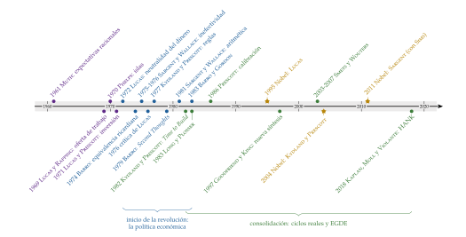
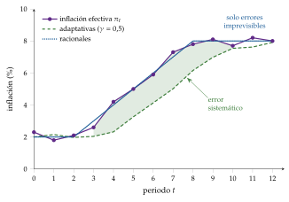
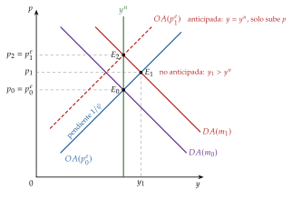
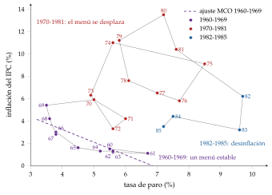
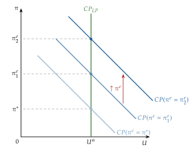
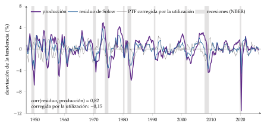
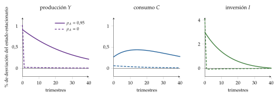
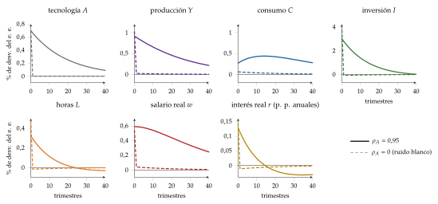
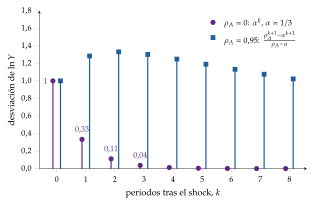

Tema 3.A.6
La nueva macroeconomía clásica. La hipótesis de las expectativas racionales; la crítica de Lucas; el surgimiento de los modelos dinámicos estocásticos de equilibrio general.
Expectativas racionales, modelo de islas de Lucas, inefectividad de la política, crítica de Lucas, Kydland-Prescott, ciclo real y el origen de los modelos EGDE.
Exclusivo Material exclusivo de victorgutierrezmarcos.es y la app Oposición TCEE · DCE. Puedes usarlo libremente para tu estudio personal. No se autoriza su incorporación a otras plataformas, aplicaciones o servicios. Condiciones de uso.
Introducción
Enganche:
«Si me engañas una vez, tuya es la culpa; si me engañas dos, la culpa es mía», dice el refrán: quien ya ha sido engañado una vez aprende y no vuelve a caer.
En octubre de 2022 la inflación de la zona del euro llegó al 10,6 %, la más alta desde que existe el euro (Eurostat, 2026).
Y, sin embargo, los expertos que encuesta el BCE esperaban para dentro de cinco años una inflación del 2,2 % de media, muy cerca del objetivo (Banco Central Europeo, 2026): casi nadie creía que el banco central fuera a dejarla correr.
En los 70 había ocurrido lo contrario: los bancos centrales intentaron una y otra vez comprar empleo con inflación, y el público, engañado la primera vez, aprendió a esperarla.
Detrás está la pregunta de esta exposición: ¿puede la política económica engañar de forma sistemática a quien la ve venir?
Relevancia:
Para la teoría: casi toda la macroeconomía de hoy se hace con su método: agentes que optimizan, expectativas racionales y modelos de equilibrio general dinámicos y estocásticos (De Vroey, 2016). Lo reconocen 3 premios Nobel: Robert Lucas (1995), Finn Kydland y Edward Prescott (2004) y Thomas Sargent (2011).
Para la política económica: los bancos centrales independientes, con un objetivo de inflación y reglas conocidas, y la idea de que la credibilidad es un activo vienen de Kydland y Prescott (1977) [ver tema 3.A.36].
Para la actualidad: el anclaje de las expectativas fue la clave del debate sobre la inflación de 2021-2023. Robert Lucas murió el 15 de mayo de 2023 (Nobel Prize Outreach, 2026), y la evaluación de la estrategia del BCE concluida en 2025 sigue girando en torno a unas expectativas ancladas en el 2 % (Banco Central Europeo, 2025a).
Además, como toda historia del pensamiento económico, enseña a no quedarse con el último manual y a ver por qué unas ideas llegan en unas épocas y no en otras: son 2 de los 4 motivos de Schumpeter (1954).1
Contextualización:
En los 60 la síntesis neoclásica dominaba la teoría y la política: el modelo IS-LM, grandes modelos macroeconométricos estimados con datos y una curva de Phillips que se leía como un menú de inflación y paro [ver tema 3.A.5].
En los 70 el menú se rompe: el fin de Bretton Woods y las crisis del petróleo traen la estanflación, inflación y paro altos a la vez. Friedman y Phelps ya habían anunciado que a largo plazo la curva de Phillips es vertical, pero con expectativas adaptativas, que admiten errores sistemáticos [ver tema 3.A.5] [ver tema 3.A.28]. Para Lucas y Sargent (1979), los modelos keynesianos sufrieron un «fracaso econométrico a gran escala».
La nueva macroeconomía clásica (NMC) cierra esa puerta. Con expectativas racionales (Muth, 1961) los agentes usan bien toda la información de que disponen y no cometen errores sistemáticos; con mercados que se vacían, solo las sorpresas mueven la producción (Lucas, 1972).
Su consecuencia metodológica es la crítica de Lucas (Lucas, 1976): un modelo cuyos parámetros cambian cuando cambia la política no sirve para evaluarla. La respuesta son los modelos de equilibrio general dinámicos y estocásticos (EGDE): agentes que optimizan a lo largo del tiempo ante perturbaciones aleatorias, en equilibrio general (Kydland y Prescott, 1982).
De Vroey (2016) habla de la revolución de Lucas: en el sentido de Kuhn, cambia las preguntas, los conceptos y las herramientas de la macroeconomía (Kuhn, 1962).
Problemática:
¿Qué es la nueva macroeconomía clásica y qué la distingue de sus predecesores?
¿Qué supone que las expectativas sean racionales?
¿Se pueden evaluar políticas con modelos estimados con los datos del pasado?
¿Cómo se construye la macroeconomía tras la crítica de Lucas, y qué queda hoy de ello?
Estructura:
La exposición sigue el orden en que la escuela se formó, primero su método y después sus 2 etapas, la de la política económica y la de los ciclos:
I. Caracterización general de la nueva macroeconomía clásica (I): quiénes la forman, la hipótesis de las expectativas racionales y en qué se separa de Keynes, de la síntesis y del monetarismo;
II. Inicio de la revolución: estudio de medidas de política económica (II): el modelo de Lucas, la proposición de inefectividad y la crítica de Lucas, y sus consecuencias para la política monetaria y la fiscal;
III. Consolidación de la revolución: teoría de los ciclos reales y el surgimiento de los modelos EGDE (III): el ciclo real como primer modelo de equilibrio general dinámico y estocástico y el surgimiento de los EGDE que hoy usan los bancos centrales.
3.A.6. La nueva macroeconomía clásica
Introducción2′30″
I. Caracterización general de la nueva macroeconomía clásica según Schumpeter7′
1. Escuela, autores y universidades
2. La hipótesis de las expectativas racionales
3. Método y diferencias con sus predecesores
II. Inicio de la revolución: estudio de medidas de política económica12′
1. Oferta de trabajo intertemporal: Lucas y Rapping (1969)
2. Modelo de información imperfecta de Lucas (1972) y crítica de Lucas (1976)
3. Reglas frente a discrecionalidad: Kydland y Prescott (1977), Barro y Gordon (1983)
4. La equivalencia ricardiana (Barro, 1974)
5. La aritmética monetarista desagradable (Sargent y Wallace, 1981)
III. Consolidación de la revolución: teoría de los ciclos reales y el surgimiento de los modelos EGDE7′30″
1. Idea: del ciclo monetario de Lucas al ciclo real
2. Características distintivas de los modelos EGDE
3. Modelo de ciclo real (Kydland y Prescott, 1982; versión de McCallum, 1989)
4. El surgimiento de los modelos EGDE: del ciclo real a la nueva síntesis
Conclusión1′
Reparto del cante: introducción, 2′30″; I, 7′ (I.1, 3′; I.2, 3′; I.3, 1′); II, 12′ (II.1, 0′45″; II.2, 5′15″: el modelo y su interpretación, 2′, la efectividad limitada de la política monetaria, 1′30″, y la crítica de Lucas, 1′45″; II.3, 3′; II.4 y II.5, 1′30″ cada uno); III, 7′30″ (III.1, 1′; III.2, 1′30″; III.3, 3′; III.4, 2′), y conclusión, 1′. Lo que va en cajas grises (las otras reglas de expectativas, los objetivos del BCE y de la Reserva Federal, la calibración del ciclo real y las cifras de la evidencia) no se canta. La caracterización de la escuela (autores, universidades, objeto y método) es lo primero que pregunta el tribunal: no baja de 3′. Los 3 epígrafes del título que no son la escuela tienen su sitio: las expectativas racionales (I.2), la crítica de Lucas (II.2.3) y el surgimiento de los EGDE (III.4).
La línea del tiempo de la escuela (figura 1) sirve para seguir la exposición y repasarla: en el cante basta con nombrar las obras por orden. Además del refrán del enganche, las pegatinas, cada una con su concepto: «nadie da duros a cuatro pesetas» (las expectativas racionales), «otros tiempos, otras costumbres» (la crítica de Lucas), «cría fama y échate a dormir» (la reputación) y «al mal tiempo, buena cara» (el ciclo real). Los gráficos son las expectativas adaptativas frente a las racionales, el plano \((y,p)\) de la oferta de Lucas, el plano \((U,\pi)\) de Kydland y Prescott (primero las curvas de Phillips ampliadas y luego los pasos de 0 a F) y las respuestas a un shock de productividad. Las funciones clave son la definición de las expectativas racionales y la curva de oferta de Lucas; en el bloque III, las ecuaciones del ciclo real. La extracción de señal y el modelo de ciclo real completo están desarrollados en los anexos A y B.
I. Caracterización general de la nueva macroeconomía clásica según Schumpeter
Una vez situada la crisis del consenso keynesiano, pasamos a ver qué escuela lo sustituyó, con qué herramienta y frente a quién.
Conclusión anticipada: la nueva macroeconomía clásica es, ante todo, un cambio de método: agentes que optimizan, mercados que se vacían y expectativas racionales. Sus conclusiones de política, reglas en lugar de discrecionalidad y escepticismo ante la estabilización, salen de ese método.
I.1. Escuela, autores y universidades
Schumpeter reconoce una escuela de pensamiento por 3 rasgos: un líder, unos seguidores y un cuerpo doctrinal propio, con su objeto y su método (Schumpeter, 1954). La NMC tiene los 3.
Líder: Robert E. Lucas (1937-2023), en Carnegie Mellon y después en Chicago. Recibió el Nobel en 1995 «por haber desarrollado y aplicado la hipótesis de las expectativas racionales, transformando así el análisis macroeconómico y profundizando en la comprensión de la política económica» (Nobel Prize Outreach, 1995).2 Con el ciclo real, Kydland y Prescott toman el relevo del programa.
Seguidores:
Thomas Sargent y Neil Wallace, en Minnesota, que sacan las consecuencias para la política monetaria y la fiscal (II.2, II.5);
Robert Barro, en Rochester y Chicago, que había formalizado con Herschel Grossman el desequilibrio (Barro y Grossman, 1971) y lo abandona en Second Thoughts on Keynesian Economics (Barro, 1979) [ver tema 3.A.4];
Finn Kydland y Edward Prescott, en Carnegie Mellon y Minnesota, que llevan el método al ciclo (III).
Edmund Phelps, con sus «islas», es el precursor (Phelps, 1970).3
Universidades: Chicago, Minnesota, Rochester y Carnegie Mellon. En 1976, Robert Hall llamó de agua dulce (freshwater) a los economistas de estas universidades, cercanas a los Grandes Lagos, frente a los de agua salada (saltwater) de las 2 costas, más keynesianos (Hall, 2026; Kocherlakota, 2010).
Cuerpo doctrinal:
Objeto: deja de ser el paro involuntario y pasa a ser, en 2 etapas:
en los 70, los efectos y el diseño de la política económica cuando los agentes tienen expectativas racionales (bloque II);
desde 1982, las fluctuaciones como una sucesión de equilibrios con mercados que se vacían: de origen monetario en Lucas, real en Kydland y Prescott (bloque III).
De ahí el nombre: nueva clásica, porque vuelve a los mercados que se vacían de clásicos y neoclásicos [ver tema 3.A.2] [ver tema 3.A.3], pero con herramientas nuevas.
Método, en 3 ideas:
microfundamentos: no hay una teoría para la micro y otra para la macro; lo agregado sale de agentes que optimizan dadas sus preferencias, su tecnología y sus restricciones;
expectativas racionales (I.2);
equilibrio continuo de los mercados: precios y salarios flexibles, sin paro involuntario.
Juntas dan los modelos EGDE (III.2).
Política económica: reglas estables y conocidas en lugar de discrecionalidad, y escepticismo ante la estabilización de la demanda.
La figura 1 ordena las obras de la escuela que recorre la exposición. Sirve para seguirla, no para dibujarla en el cante; en verde claro, las aportaciones más propias de la nueva economía keynesiana, que se levantan sobre el armazón EGDE.

I.2. La hipótesis de las expectativas racionales
Una vez vistos quiénes son y qué método comparten, pasamos a la herramienta que los distingue de todos sus predecesores.
Conclusión anticipada: con expectativas racionales los agentes pueden equivocarse, pero no de forma sistemática. Lo que la política hace de forma previsible ya está descontado.
a) Idea
Casi todas las decisiones económicas dependen de lo que se espera del futuro: salarios, precios, inversión, consumo. Hasta los 60 había 2 formas de modelizarlo:
estáticas: se espera lo de hoy, \(\pi^e_t=\pi_{t-1}\);
adaptativas: se corrige una parte del error del periodo anterior [ver tema 3.A.5], \[\tag{1} \pi^e_t=\pi^e_{t-1}+\gamma\,(\pi_{t-1}-\pi^e_{t-1}),\qquad \gamma\in(0,1].\] Los agentes aprenden de sus errores, pero, si la inflación sube año tras año, se quedan siempre cortos: cometen errores sistemáticos.
Muth (1961) parte de la telaraña, en la que los agricultores, que deciden cuánto sembrar con el precio de la cosecha anterior, se equivocan siempre en el mismo sentido [ver tema 3.A.16]. Propone que las expectativas, «puesto que son predicciones informadas de los acontecimientos futuros, son en lo esencial iguales que las predicciones de la teoría económica relevante» (Muth, 1961, 316). Con ellas, el precio solo se aparta del equilibrio por la perturbación de cada periodo, y el ciclo de la telaraña desaparece.
Lucas y Prescott (1971) la aplican a la inversión, y Lucas (1972) la lleva por primera vez a un modelo macroeconómico de equilibrio general.
Pegatina: «nadie da duros a cuatro pesetas». Si un error fuera previsible, alguien lo aprovecharía y dejaría de serlo.
b) Modelo
i) Supuestos
Los agentes usan de forma eficiente toda la información de que disponen al formar la expectativa, \(\Omega_{t-1}\), incluido el modelo de la economía y la regla de la política económica (o se comportan como si los conocieran).
La incertidumbre es riesgo: hay una distribución de probabilidad objetiva y estable a la que referirse.
ii) Desarrollo
Definición: la expectativa racional de una variable es su esperanza matemática condicionada a la información disponible, calculada con el verdadero modelo. El error de previsión, \(\varepsilon_t\) (aquí no es una elasticidad), tiene media nula dada esa información:
\[x^e_t\equiv\mathbb{E}\left[x_t\mid\Omega_{t-1}\right]=\mathbb{E}_{t-1}[x_t],\qquad x_t-x^e_t=\varepsilon_t,\quad \mathbb{E}\left[\varepsilon_t\mid\Omega_{t-1}\right]=0\tag{2}\]
En palabras: los agentes usan de forma eficiente toda la información de que disponen, incluido el modelo de la economía, y no cometen errores sistemáticos.
Propiedades del error de previsión:
media nula: la previsión es insesgada;
ortogonalidad: el error no está correlacionado con nada de lo que se sabía al prever, \(\mathbb{E}[\varepsilon_t\,z_{t-1}]=0\) para toda \(z_{t-1}\in\Omega_{t-1}\). Como los errores pasados forman parte de \(\Omega_{t-1}\), los errores no están autocorrelacionados;
eficiencia: ninguna otra previsión basada en \(\Omega_{t-1}\) tiene un error cuadrático medio menor;
ley de las expectativas iteradas: lo que hoy espero que esperaré mañana es lo que hoy espero, \(\mathbb{E}_t\left[\mathbb{E}_{t+1}[x_{t+2}]\right]=\mathbb{E}_t[x_{t+2}]\).
No exigen previsión perfecta: el error puede ser grande; lo que no puede es ser previsible. Tampoco hace falta que sea normal ni de varianza constante: eso depende del modelo, no de la hipótesis.
Versión fuerte y versión débil (Snowdon y Vane, 2005, cap. 5):
fuerte, la de Muth y la NMC: la expectativa subjetiva coincide con la esperanza matemática condicionada del verdadero modelo, (2);
débil: los agentes usan de forma eficiente la información que deciden reunir, y la reúnen mientras su beneficio marginal supere su coste.
Adaptativas frente a racionales: supongamos que el banco central acelera el crecimiento del dinero y la inflación sube un punto por periodo durante 6 periodos, \(\pi_t=\pi_{t-1}+1\), y luego se estabiliza (figura 2).
Con adaptativas y \(\gamma=0{,}5\), la expectativa corrige cada periodo la mitad del error anterior y va siempre por detrás mientras la inflación sube: el error es sistemático y del mismo signo. Con \(\gamma=1\), \(\pi^e_t=\pi_{t-1}\) y el error sería de \(+1\) punto cada periodo. Mientras dura el engaño, el paro se mantiene por debajo de su tasa natural.
Con racionales, \(\pi^e_t=\mathbb{E}_{t-1}[\pi_t]\) es la senda prevista: solo se falla en la perturbación imprevista de cada periodo, de media nula. Con una regla conocida no hay engaño posible.

Fuente: elaboración propia.
Otras reglas de expectativas (se citan a veces en el test). Además de las estáticas y las adaptativas (1), la literatura anterior a Muth usaba:
extrapolativas: una media ponderada de la inflación pasada, \(\pi^e_t=\sum_{i=1}^{n}a_i\,\pi_{t-i}\), con \(\sum_i a_i=1\) y pesos que bajan con la distancia;
regresivas: la misma media con pesos que suman menos de 1 y un ancla de largo plazo, \(\pi^e_t=\sum_{i=1}^{n}b_i\,\pi_{t-i}+\left(1-\sum_i b_i\right)\bar\pi\).
Las adaptativas son un caso de las extrapolativas, con pesos \(a_i=\gamma(1-\gamma)^{i-1}\). Todas son mecánicas: miran solo al pasado de la propia variable y no cambian aunque cambie la política. Las racionales, en cambio, usan toda la información, también la regla que sigue el banco central, y por eso cambian cuando cambia la regla.
iii) Implicaciones
Desaparece la ilusión monetaria sistemática: la curva de Phillips solo se separa de la vertical por sorpresas [ver tema 3.A.28].
Lo anticipado de la política entra en las expectativas: es la base de la proposición de inefectividad de la política sistemática (II.2.2).
Las expectativas miran al futuro y dependen de la política que se espera: es la base de la crítica de Lucas (II.2.3) y de la inconsistencia temporal (II.3).
Fuera de la política monetaria, el consumo como paseo aleatorio (Hall, 1978) [ver tema 3.A.33], la eficiencia de los mercados financieros (Fama, 1970) y la modelización dinámica con agentes que miran al futuro [ver tema 3.A.29].
c) Extensiones
Aprendizaje: si los agentes estiman el modelo con los datos y revisan sus estimaciones, en muchos modelos acaban en el equilibrio de expectativas racionales; cuando no, el aprendizaje crea dinámicas propias (Evans y Honkapohja, 2001; Sargent, 1993).
Información rígida o costosa: agentes que solo ponen al día su información de vez en cuando (Mankiw y Reis, 2002) o que deciden cuánta atención prestar (Sims, 2003) [ver tema 3.A.7].
Equilibrios múltiples: incluso con expectativas racionales puede haber burbujas y profecías que se cumplen solas [ver tema 3.A.29].
d) Evidencia empírica
Las encuestas de expectativas rechazan la versión fuerte en el agregado: el error medio de previsión se puede anticipar con la revisión de las previsiones, señal de rigideces de información (Coibion y Gorodnichenko, 2015).
Para Lucas, la hipótesis no se contrasta sola, sino junto con el modelo del que forma parte: lo que los datos pueden rechazar es el modelo.
e) Valoración
Críticas:
coste de la información: si informarse cuesta, nadie usa toda la información; y si los precios ya la reflejaran entera, nadie pagaría por obtenerla (Grossman y Stiglitz, 1980);
conocimiento del modelo: es mucho suponer que los agentes conocen un modelo sobre el que los propios economistas no se ponen de acuerdo (Shiller, 1978);
validez limitada: Modigliani (1977) la aceptaba en los mercados especulativos, pero no en los de trabajo;
incertidumbre radical: con la incertidumbre de Keynes, sin distribución de probabilidad estable, el pasado no informa del futuro y la esperanza condicionada no está definida (Davidson, 1982) [ver tema 3.A.4];4
racionalidad limitada: la economía conductual documenta sesgos sistemáticos al formar expectativas [ver tema 3.A.1].
Por qué se impuso: cualquier otra hipótesis supone que los agentes ignoran información que tienen o repiten errores que podrían evitar, y obliga a elegir una regla ad hoc entre muchas. Por eso la nueva economía keynesiana también la adoptó y discutió otra pieza, el vaciado continuo de los mercados [ver tema 3.A.7].
I.3. Método y diferencias con sus predecesores
Con la herramienta ya definida, pasamos a ver en qué se separa la NMC de las escuelas a las que sustituye. La tabla 1 lo resume y es lo que se cuenta en el cante.
Frente a Keynes:
Lucas lo dijo sin rodeos: «la teoría económica es análisis matemático; todo lo demás son dibujos y palabras» (Lucas, 2001, 9). Las piezas de la Teoría general, como la función de consumo o la preferencia por la liquidez, son reglas de comportamiento sin fundamento en un problema de optimización [ver tema 3.A.4].
Le reconoce, eso sí, haber convencido al mundo de que había una salida de la Gran Depresión sin abandonar la economía de mercado.
Frente a la síntesis neoclásica: acepta su lenguaje formal, que fue un progreso frente al razonamiento verbal, pero le reprocha 4 cosas [ver tema 3.A.5]:
modelos econométricos cuyos parámetros cambian con la política: es la crítica de Lucas (II.2.3);
un equilibrio general incompleto: la síntesis estudia la demanda de consumo, la de inversión o la de dinero por separado; la NMC determina todas las variables a la vez;
la separación entre un corto plazo keynesiano y un largo plazo clásico: para Lucas un solo modelo debe valer para cualquier horizonte;
la confianza en la estabilización: si los agentes anticipan la política, la sintonía fina pierde su base (II.2.2).
A ellas se suma un cambio en la forma de llevar el modelo a los datos: Kydland y Prescott calibran los parámetros con estudios micro y regularidades de largo plazo, en lugar de estimarlos ecuación a ecuación (III.2).
Frente a Friedman:
comparte la tasa natural, la neutralidad del dinero a largo plazo y la preferencia por las reglas. Lucas admitió que ni su modelo de ciclo ni el de Kydland y Prescott explicaban la Gran Depresión, y elogió la explicación monetaria de Friedman y Schwartz (1963) en una reseña treinta años posterior (Lucas, 1994);
pero cambia las expectativas adaptativas, que permiten errores sistemáticos, por las racionales, y el equilibrio parcial marshalliano por el general walrasiano;
es la paradoja que subraya De Vroey (2016): el sucesor del monetarismo no fue el monetarismo, sino la NMC [ver tema 3.A.5].
Frente a los keynesianos del desequilibrio: aceptan precios fijos sin explicar por qué no se mueven y expectativas que no son racionales. Por eso Barro (1979), que había sido uno de ellos, los abandona: unos precios que no se ajustan dejan sin aprovechar ganancias del intercambio [ver tema 3.A.4].
Equilibrio: para Lucas y Sargent (1979), decir que una economía está en equilibrio es decir 2 cosas que se cumplen en cada momento: los mercados se vacían y los agentes optimizan. Ya no es, como en la tradición keynesiana, un estado de reposo al que se llega o no (De Vroey, 2016). Las recesiones son respuestas óptimas a perturbaciones, no errores.5
| Macroeconomía keynesiana | Nueva macroeconomía clásica | |
|---|---|---|
| Punto de partida | Teoría general de Keynes (1936) | «Expectations and the Neutrality of Money», de Lucas (1972) |
| Qué quiere explicar | el paro o el subempleo | el ciclo |
| Factor explicativo | rigidez o lentitud de los salarios | respuesta de los agentes a perturbaciones monetarias cuando extraen señales de los precios |
| Concepto de equilibrio | estado de reposo | equilibrio intertemporal |
| Equilibrio general | «incompleto» | completo |
| Tipo de economía | monetaria | monetaria |
| Microfundamentos | no imprescindibles | imprescindibles |
| Expectativas | adaptativas | racionales |
| Qué mueve la economía | la demanda | la oferta |
| Efectos reales de la política monetaria | la expansión funciona | la expansión no funciona |
| Síntesis neoclásica | apoyo | rechazo |
| Método empírico | el de la Comisión Cowles | la crítica de Lucas |
| Prioridad metodológica | coherencia externa (ajuste a los datos) | coherencia interna |
| Conclusión de política | activar la demanda | laissez faire |
| Intuición y accesibilidad | altas | bajas |
Fuente: elaboración propia a partir de De Vroey (2016, tabla 10.1).
Recapitulación: la NMC tiene un líder, Lucas; unos seguidores, de Minnesota a Rochester; y un cuerpo doctrinal hecho de microfundamentos, mercados que se vacían y expectativas racionales. Con esa herramienta, el bloque II pregunta qué puede hacer la política económica.
II. Inicio de la revolución: estudio de medidas de política económica
Una vez caracterizada la escuela y su herramienta, pasamos a ver qué dice de la política económica.
Conclusión anticipada: con expectativas racionales y mercados que se vacían, solo lo que sorprende mueve la producción, así que una regla conocida no estabiliza; los modelos estimados con el pasado no sirven para evaluar un cambio de régimen; la discrecionalidad tiene un sesgo inflacionista; financiar el gasto con deuda o con impuestos puede dar igual, y la política monetaria depende de la fiscal.
II.1. Oferta de trabajo intertemporal: Lucas y Rapping (1969)
Lucas y Rapping (1969) hacen con la oferta de trabajo lo que Friedman y Modigliani habían hecho con el consumo [ver tema 3.A.33] y Jorgenson con la inversión [ver tema 3.A.34]: derivarla de un agente que optimiza a lo largo del tiempo. Dejan 2 ideas que la NMC hará suyas:
la sustitución intertemporal del trabajo: el trabajador decide cuándo trabajar. Las horas de hoy frente a las de mañana crecen con el salario relativo y con el tipo de interés, \[\tag{3} \frac{L_1}{L_2}=f\left(\frac{w_1}{w_2},\ r\right),\qquad f_1>0,\ f_2>0,\] de modo que un salario alto transitorio aumenta mucho las horas y uno permanente apenas. Cuánto, lo dice la elasticidad de Frisch, \(\varepsilon^F_{L,w}=1/\varphi\) [ver tema 3.A.25];
un mercado de trabajo que se vacía: el paro medido sería, en parte, sustitución intertemporal voluntaria. Es el paso que abandona el paro involuntario keynesiano.
Trabajan todavía con expectativas adaptativas: el salto a las racionales lo da Lucas (1972).
II.2. Modelo de información imperfecta de Lucas (1972) y crítica de Lucas (1976)
Con la oferta de trabajo ya microfundamentada, pasamos al modelo que inaugura la escuela. Lo contamos en 3 pasos: el modelo y su curva de oferta; la demanda, el equilibrio y la inefectividad de la política sistemática, y la crítica de Lucas, que sale de él.
II.2.1. El modelo de islas y la curva de oferta de Lucas
a) Idea
En «Expectations and the Neutrality of Money», Lucas (1972) junta las 3 piezas del método (agentes que optimizan, mercados que se vacían y expectativas racionales) y añade una cuarta, la información imperfecta.
La pregunta: ¿por qué el dinero mueve la producción a corto plazo si los agentes son racionales y los mercados se vacían? La respuesta: porque los productores confunden una subida de su precio relativo con una subida del nivel general de precios. Da así fundamento a la curva de Phillips aumentada de Friedman y Phelps [ver tema 3.A.5], sin errores sistemáticos, y llega a una conclusión aún más dura contra la estabilización.
Seguimos la versión simplificada de los manuales;6 la derivación está en el anexo A.
b) Modelo
i) Supuestos
Islas: los productores están repartidos en muchos mercados separados, las «islas» de Phelps (1970). Cada uno ve el precio de su isla, \(p_{i,t}\), pero no el nivel general, \(p_t\). Las variables están en logaritmos.
2 perturbaciones: el precio de la isla es el general más una perturbación real propia, \(p_{i,t}=p_t+z_{i,t}\):
\(z_{i,t}\), de media nula y varianza \(\sigma^2_z\), cambia el precio relativo de la isla (preferencias o tecnología): ante ella, lo óptimo es producir más;
\(p_t\), con media \(p^e_t\equiv\mathbb{E}_{t-1}[p_t]\) y varianza \(\sigma^2_p\), la mueve el dinero: ante ella, lo óptimo es no cambiar la producción.
Las 2 son normales e independientes.
Oferta de cada isla: crece con el precio relativo que el productor cree que tiene, con una elasticidad \(\varepsilon_S>0\) que viene de la oferta de trabajo intertemporal (II.1): \(y_{i,t}=y^n+\varepsilon_S\,\mathbb{E}[z_{i,t}\mid p_{i,t}]\).
Demanda agregada cuantitativa, con la velocidad normalizada: \(y_t=m_t-p_t\) [ver tema 3.A.35].
Expectativas racionales (2).
ii) Desarrollo
Extracción de señales: el productor reparte la subida que ve entre la parte que cree real y la que cree nominal. Con perturbaciones normales, \[\tag{4} \mathbb{E}[z_{i,t}\mid p_{i,t}]=\omega\,\left(p_{i,t}-p^e_t\right),\qquad \omega=\frac{\sigma^2_z}{\sigma^2_z+\sigma^2_p}\in[0,1].\] \(\omega\) es la parte de la varianza del precio de la isla que se debe a las perturbaciones reales (no es una probabilidad). Si los precios relativos varían mucho y el nivel general poco, \(\omega\) se acerca a 1 y el productor atribuye casi toda la subida a su mercado; si la política monetaria es errática, \(\omega\) se acerca a 0.
Oferta agregada: sumando las islas, las perturbaciones propias se compensan y queda la curva de oferta de Lucas:
\[y_t=y^n+\psi\,(p_t-p^e_t),\qquad \psi=\omega\,\varepsilon_S,\quad \omega=\frac{\sigma^2_z}{\sigma^2_z+\sigma^2_p}\tag{5}\]
Interpretación de la curva de oferta agregada de Lucas:
Si la probabilidad de que el shock sea específico es nula (\(\sigma^2_z=0\), y por tanto \(\omega=0\)), no habrá desviaciones del nivel de producción a largo plazo, \(y^n\).
Por mucha probabilidad que tenga un shock de ser específico, si los productores no reaccionan ante él (\(\varepsilon_S=0\)), tampoco habrá desviación.
Aunque un shock observado pueda ser específico y los productores estén dispuestos a variar su producción, si los cambios en el nivel de precios fueron completamente anticipados por los agentes (\(p_t=p^e_t\)), tampoco habrá desviaciones. Así, en ausencia de sorpresas de precios, el productor se mantendrá en su nivel natural.7
Interpretación gráfica (figura 3): en el plano \((y,p)\), la oferta de Lucas es creciente, con pendiente \(1/\psi\), y corta la vertical \(y^n\) en \(p=p^e\).
iii) Implicaciones
Con la ley de Okun, la oferta de Lucas es la curva de Phillips con expectativas racionales, \(U_t=U^n-\alpha\,(\pi_t-\pi^e_t)\) [ver tema 3.A.28]; en un país de inflación errática la curva es casi vertical [ver tema 3.A.41].
La pendiente depende de la política: cuanto más volátil es la política monetaria, mayor es \(\sigma^2_p\), menor \(\omega\) y más vertical la oferta. Es la semilla de la crítica (II.2.3).
Lo que esto implica para la eficacia de la política monetaria se ve al cerrar el modelo con la demanda (II.2.2).
II.2.2. Demanda, equilibrio e inefectividad de la política sistemática
a) Idea
Con la oferta en la mano, falta cerrar el modelo con la demanda y preguntar lo que interesa a la política: ¿puede una regla monetaria conocida estabilizar la producción? Lo preguntaron Sargent y Wallace (1975, 1976), y su respuesta es la proposición de inefectividad (o de ineficacia) de la política sistemática.
b) Modelo
i) Supuestos
La oferta de Lucas (5), con una perturbación de oferta \(u_t\), ruido blanco: \(y_t=y^n+\psi\,(p_t-p^e_t)+u_t\).
La demanda \(y_t=m_t-p_t\).
Una regla monetaria con realimentación, que responde a la perturbación de ayer, más un componente imprevisto \(\varepsilon_t\) de media nula (la sorpresa monetaria, que es justamente un error de previsión como el de (2)): \(m_t=\mu_0+\mu_1u_{t-1}+\varepsilon_t\).
ii) Desarrollo
Equilibrio (sin \(u_t\)): igualando la oferta y la demanda y tomando expectativas, la producción y los precios son
\[y_t=y^n+\frac{\psi}{1+\psi}\,\left(m_t-\mathbb{E}_{t-1}[m_t]\right)\tag{6}\]
\[\tag{7} p_t=\mathbb{E}_{t-1}[m_t]-y^n+\frac{1}{1+\psi}\,\left(m_t-\mathbb{E}_{t-1}[m_t]\right).\] La parte prevista del dinero va entera a los precios; la sorpresa se reparte entre producción y precios.
Gráficamente (figura 3): una expansión no anticipada desplaza solo la demanda y la economía se mueve a lo largo de la oferta: sube la producción y los precios suben menos que el dinero. Una expansión anticipada desplaza a la vez la demanda y la oferta, porque sube \(p^e\): solo suben los precios.

Fuente: elaboración propia a partir de Lucas (1972) y D. Romer (2019, cap. 6).
Con la regla: como \(u_{t-1}\) se conoce en \(t-1\), el público lo descuenta, \(\mathbb{E}_{t-1}[m_t]=\mu_0+\mu_1u_{t-1}\), y la producción de equilibrio es \[\tag{8} y_t=y^n+\frac{\psi\,\varepsilon_t+u_t}{1+\psi},\qquad \frac{\partial y_t}{\partial\mu_1}=0 .\]
iii) Implicaciones
Efectividad limitada de la política monetaria:
De esta formulación se desprende que la política monetaria puede tener efectos en el output, pero con 3 condiciones:
El impacto es solo a muy corto plazo (pues la nueva información se obtendrá en un plazo inferior a la duración del periodo y los agentes actualizan sus precios) y no tiene persistencia (salvo a través de la variación de existencias o los costes de ajuste en la inversión, como en Lucas (1975), III.1).
La intuición es que, si se ha producido un shock monetario, es plausible que los agentes incrementen su oferta de trabajo a muy corto plazo, pero en cuanto observen la evolución de las variables reales ajustarán sus decisiones de oferta de trabajo y se verán obligados a adaptarse a la mayor inflación.
El impacto de la política monetaria solo se produce en el caso de políticas sorpresivas no anunciadas.
Las políticas sistemáticas se incluirán automáticamente en las expectativas de inflación que los agentes formulan racionalmente (Sargent y Wallace, 1975). Esto se conoce como la proposición de la irrelevancia de las políticas estabilizadoras sistemáticas (PIP, Policy Irrelevance Proposition).
En el modelo, la producción no depende de \(\mu_1\): la parte sistemática de la regla solo mueve los precios. Únicamente las sorpresas, \(\varepsilon_t\), afectan a la producción, y sorprender no estabiliza: añade ruido.
En palabras de Sargent y Wallace (1976): «En este sistema, la autoridad no tiene ninguna posibilidad de hacer política contracíclica. Para explotar la curva de Phillips tendría que engañar al público. Pero, como las expectativas son racionales, no hay ninguna regla con realimentación con la que pueda esperar engañarlo sistemáticamente. La autoridad no puede esperar explotar la curva de Phillips ni siquiera durante un periodo».
La pendiente de la curva de Phillips depende de las varianzas de los shocks reales y monetarios (Lucas, 1973; Ball, Mankiw y Romer, 1988).
Si los shocks monetarios son habituales (\(\sigma^2_p\) es elevada), el impacto de las sorpresas inflacionistas en el output será menor (\(\omega\) será menor), pues cuando los individuos vean que aumenta el precio en su mercado, \(p_{i,t}\), asignarán una mayor probabilidad a que se trate de un aumento del nivel general de precios que a un shock de precios relativos. Es decir, los agentes racionales aprenden a anticipar posibles reglas de estabilización contracíclica siempre que sean utilizadas de forma consistente por los bancos centrales.
Además, la efectividad dependerá de la velocidad a la que los empresarios aumentan la producción en respuesta a un shock específico, que vendrá determinada por la elasticidad de la oferta de trabajo, \(\varepsilon_S\).
¿Qué opina la literatura de estas ideas?
Las 2 primeras ideas han sido objeto de una fuerte controversia teórica y empírica: existe debate acerca de si la política monetaria tiene efectos reales o solo afecta a los precios, y de si esos efectos se mantienen incluso cuando la política se anuncia con anticipación. Los resultados empíricos de estos 2 principios son mixtos y no del todo concluyentes.
El tercer corolario goza de mayor consenso, y permitió al mismo autor formular la crítica de Lucas (II.2.3).
No es la superneutralidad del dinero (neutralidad a largo plazo frente a su tasa de crecimiento): la inefectividad vale también a corto plazo, para la parte anticipada de la política.
c) Extensiones
Con contratos salariales firmados antes de conocer la perturbación, la política sistemática sí estabiliza aunque las expectativas sean racionales: el banco central reacciona con información que los contratos no pudieron usar (Fischer, 1977; Taylor, 1980) [ver tema 3.A.7] [ver tema 3.A.37]. Lo que da la inefectividad no son las expectativas racionales, sino la flexibilidad de los precios.
d) Evidencia empírica
e) Valoración
Críticas a los supuestos: el vaciado continuo deja fuera el paro involuntario, y la información imperfecta es poco creíble cuando el IPC y los agregados monetarios se publican cada mes.
Críticas a los resultados: para generar fluctuaciones grandes necesita una oferta de trabajo muy elástica, y no genera persistencia, cuando la producción de los datos está muy autocorrelacionada.
Lo que queda: el método y una idea, que la respuesta de la economía depende de la regla que sigue la política. Lucas la convirtió en una crítica general a los modelos de la época.
II.2.3. La crítica de Lucas
a) Idea
En los 60 y los 70 la política se evaluaba con grandes modelos macroeconométricos, herederos del de Klein y Goldberger (1955): se estimaban con datos del pasado y se simulaban políticas alternativas manteniendo fijos los coeficientes.
En «Econometric Policy Evaluation: A Critique», Lucas (1976) sostiene que esa práctica no es legítima cuando la política simulada es distinta de la que regía en la muestra: las reglas de decisión de los agentes, y con ellas los coeficientes estimados, dependen de la política que esperan.
Pegatina: «otros tiempos, otras costumbres». Cambia la política y cambian las reglas con las que deciden los agentes.
b) Modelo
i) Supuestos
Hay 2 tipos de parámetros:
profundos o estructurales: preferencias, tecnología y restricciones (la paciencia, la aversión al riesgo, la elasticidad de la oferta, las varianzas de las perturbaciones reales), que no cambian con la política;
los de las reglas de decisión que se estiman, que mezclan los profundos con la regla de política a través de las expectativas.
Los agentes tienen expectativas racionales y conocen la regla.
ii) Desarrollo
Ejemplo con el propio modelo de islas: si el banco central sigue la regla \(m_t=\mu+\rho_m\,m_{t-1}+\varepsilon_t\), entonces \(\mathbb{E}_{t-1}[m_t]=\mu+\rho_m m_{t-1}\) y, por (6), \[\tag{9} y_t=\underbrace{(y^n-\tilde\psi\mu)}_{\beta_0}+\underbrace{\tilde\psi}_{\beta_1}\,m_t\underbrace{-\tilde\psi\rho_m}_{\beta_2}\,m_{t-1},\qquad \tilde\psi\equiv\frac{\psi}{1+\psi}.\]
Un econometrista que estime \(y_t=\beta_0+\beta_1m_t+\beta_2m_{t-1}\) encontrará \(\hat\beta_1>0\) y concluirá que más dinero da más producción. Pero:
si el banco central sube \(\mu\) para explotarlo, \(\beta_0\) cae exactamente lo necesario y la producción no cambia;
si cambia \(\rho_m\), cambia \(\beta_2\);
y si la política se vuelve más errática, baja \(\psi\) (II.2.1) y cambia hasta \(\beta_1\).
Los parámetros profundos son \(y^n\), \(\varepsilon_S\) y \(\sigma^2_z\); los \(\beta\) son funciones de la política.
iii) Implicaciones
Microfundamentar: los modelos para evaluar políticas deben escribirse con parámetros profundos, agentes que optimizan y expectativas racionales. Es el programa que llevará a los EGDE (bloque III).
Evaluar reglas, no decisiones sueltas: lo que los agentes descuentan es la regla, y la política se elige entre reglas.
Estimar las condiciones de optimalidad: la ecuación de Euler del consumo no depende de la política y se puede estimar directamente (Hall, 1978; L. P. Hansen y Singleton, 1983) [ver tema 3.A.33].
Es también una crítica de método: qué es un buen modelo y para qué sirve [ver tema 3.A.1].
c) Extensiones
Sims (1980b) propone la salida contraria: vectores autorregresivos (VAR), con la menor carga de teoría posible, para dejar hablar a los datos. Para él, la mayoría de las decisiones de política son movimientos dentro de una regla, no cambios de régimen, y para ellas las formas reducidas sirven: son intervenciones modestas (Leeper y Zha, 2003).
d) Evidencia empírica
La pendiente cambia con la volatilidad de la política, como predice (5): Lucas (1973) lo contrastó con datos de varios países: donde la demanda nominal es más volátil, su efecto sobre la producción es menor.
Ball, Mankiw y Romer (1988) lo repitieron con muchos más países y confirmaron la relación; pero, al añadir la inflación media, la volatilidad deja de ser significativa y lo que explica la pendiente es el nivel de la inflación. Es lo que predice la nueva economía keynesiana, con precios que se revisan más a menudo cuando la inflación es alta, y no la confusión de Lucas [ver tema 3.A.7].
El contraste en cifras (para consultar, no para cantar):
Lucas (1973) lo hace en 2 pasos con 18 países (1952-1967): primero estima, país a país, el efecto de la demanda nominal sobre la producción real, \(y_t=a_0+a_1\,t+\tau\,\Delta x_t+a_2\,y_{t-1}\), con \(\Delta x_t\) la variación del PIB nominal; después regresa esos efectos sobre la volatilidad de la demanda nominal, \(\tau_i=b_0+b_1\,\sigma_{\Delta x,i}\), y encuentra \(b_1<0\) y significativo.
Ball, Mankiw y Romer (1988), con 43 países (1948-1986): con la volatilidad de la demanda nominal sola, el coeficiente es de \(-1{,}639\), como en Lucas; con la inflación media, la volatilidad deja de ser significativa (Ball, Mankiw y Romer, 1988, tabla 5).
La curva de Phillips de los 60 no era un menú estable: en Estados Unidos, los datos de los 60 dibujan una curva de pendiente negativa; en los 70 se desplaza hacia arriba, con inflación y paro altos a la vez (figura 4). La relación cambió cuando cambió la política [ver tema 3.A.28].

Fuente: elaboración propia con datos del BLS a través de FRED (Federal Reserve Bank of St. Louis, 2026b).
Contrastes formales, con resultados matizados: Favero y Hendry (1992) no encuentran que los parámetros de la demanda de dinero cambien con los cambios de política; Lindé (2001) muestra que esos contrastes tienen poca potencia, y Rudebusch (2005), que los cambios de la política de la Reserva Federal fueron demasiado pequeños para mover mucho las formas reducidas.
e) Valoración
Cambió la profesión más que a los bancos centrales, que siguieron usando durante años modelos macroeconométricos keynesianos antes de adoptar modelos EGDE estimados.
Se vuelve también contra sus herederos: muchos parámetros de los EGDE (hábitos, costes de ajuste, indexación) se añaden para ajustar los datos, y no está claro que sean profundos (Chari, Kehoe y McGrattan, 2009).
Recapitulación: si los agentes miran al futuro, quien hace la política también debe hacerlo. Es la puerta a la inconsistencia temporal.
II.3. Reglas frente a discrecionalidad: Kydland y Prescott (1977), Barro y Gordon (1983)
a) Idea
Una vez vista la crítica, pasamos a lo que implica que la política tenga que mirar al futuro.
Del modelo de Lucas (1972) se infiere que los elementos sistemáticos de la política monetaria son irrelevantes para la economía real: la curva de Phillips solo tiene pendiente negativa en el muy corto plazo, mientras los agentes ajustan sus expectativas, y es vertical a largo plazo, en el nivel de la tasa natural de paro.
Estos resultados fueron refrendados para Estados Unidos en la posguerra (Barro, 1977).
Sin embargo, la evidencia empírica señala también políticas anticíclicas en el mismo periodo: los aumentos del paro suelen ir seguidos de aumentos de la oferta monetaria. Dentro del marco de la tasa natural de paro es difícil reconciliar esta reacción de las autoridades con un comportamiento racional.
En «Rules Rather than Discretion: The Inconsistency of Optimal Plans», Kydland y Prescott (1977) (y, después, Barro y Gordon (1983a)) amplían este análisis a un marco de juegos, para considerar las interacciones estratégicas entre la autoridad y el público [ver tema 3.A.14].
Estos modelos muestran que la preocupación simultánea por reducir el paro y controlar la inflación puede dar lugar a pérdidas de bienestar por la inconsistencia dinámica (o temporal) de la política monetaria.
Importancia:
Teórica: justifican una política monetaria reglada con un objetivo de control de la inflación, e introducen el concepto de consistencia dinámica, que después pasó a otros ámbitos, como los impuestos sobre el capital, las patentes o la teoría de la regulación [ver tema 3.A.20].
Práctica: han estimulado la adopción de objetivos de inflación en muchos países.
La esencia de su contribución es un problema de inconsistencia temporal de las decisiones de política económica:
Una autoridad monetaria racional y previsora (forward-looking) elige al principio la senda que maximiza el bienestar social: minimiza una función de pérdida social, y, si el público puede deducir esa regla de juego, la regla define sus expectativas.
Pero, si puede volver a optimizar más tarde, la autoridad tenderá a cambiar sus planes. No lo hace por un conflicto de objetivos con el público ni para reaccionar ante shocks imprevistos, sino porque las expectativas del sector privado son restricciones para sus decisiones, y los agentes las ajustan conforme la autoridad cambia sus planes.
Como la autoridad ajusta sus decisiones a las expectativas del público y el público ajusta sus expectativas a lo que hará la autoridad, en equilibrio la inflación esperada es igual a la realizada.
En definitiva, un plan óptimo hoy deja de serlo mañana, una vez que los agentes han actuado creyéndolo: una autoridad que vuelve a optimizar en cada momento (discrecionalidad) acaba peor que una que se compromete con una regla.
b) Modelo
i) Supuestos
El juego: un juego secuencial de 2 etapas que se repite indefinidamente, con 2 jugadores, la autoridad monetaria y el sector privado. Se resuelve por inducción hacia atrás [ver tema 3.A.14].
Orden de las jugadas: primero el público fija sus expectativas de inflación, \(\pi^e_t\) (por ejemplo, en los convenios salariales); después, la autoridad elige la inflación. Si fuera al revés, la autoridad elegiría la regla y no habría inconsistencia.
Información completa: el público conoce la función de pérdida de la autoridad; lo que falta es compromiso.
El sector privado: se caracteriza por una curva de Phillips ampliada con expectativas. Kydland y Prescott parten de la relación negativa entre paro e inflación de la síntesis neoclásica, pero no con la curva de Phillips original ni con la de Samuelson y Solow, sino con la ampliada con expectativas [ver tema 3.A.28]: \[\tag{10} U_t=U^n-\alpha\,(\pi_t-\pi^e_t),\qquad \alpha>0 .\]
El paro de un periodo se desvía del natural8 si la inflación observada difiere de la esperada. Si la inflación es mayor que la esperada, el paro es menor que el natural: una política monetaria expansiva no anticipada puede aumentar la actividad.
La autoridad monetaria interpreta (10) como la función de reacción (o de mejor respuesta) del público, y es una restricción a su actuación.
Interpretación gráfica (figura 5): hay una curva de corto plazo para cada inflación esperada, que corta la vertical de largo plazo, \(U^n\), justo en \(\pi=\pi^e\); si sube la inflación esperada, la curva se desplaza hacia arriba.

Fuente: elaboración propia a partir de Kydland y Prescott (1977).
La autoridad monetaria: tiene el monopolio de emisión del dinero y un control perfecto de la inflación de cada periodo.9 Minimiza una función de pérdida social, cuadrática en las desviaciones de la inflación y del paro respecto de sus objetivos, sujeta a la curva de Phillips que describe la respuesta del sector privado:10 \[\begin{array}{rl}\displaystyle \min_{\pi_t} & \displaystyle L_t=(U_t-U^*)^2+\gamma\,(\pi_t-\pi^*)^2 \\ \text{s.a.} & U_t=U^n-\alpha\,(\pi_t-\pi^e_t)\end{array}\]
Los objetivos no tienen por qué ser nulos:
el paro objetivo es menor que el natural, \(U^*<U^n\) (por ejemplo, por las distorsiones del mercado de trabajo); sin ello no hay sesgo;
la inflación objetivo, \(\pi^*\), tampoco tiene por qué ser 0: el BCE, por ejemplo, apunta al 2 %.
Las preferencias se representan con curvas de indiferencia social con forma de elipse, centradas en el punto de felicidad (bliss point), \((U^*,\pi^*)\): cuanto más cerca de él se sitúe la autoridad, menor pérdida tendrá que aceptar.
El parámetro \(\gamma\) determina la importancia relativa de los 2 objetivos (figura 6):
si \(\gamma\) es elevado, la sociedad da más peso a la inflación: son preferencias hard-nosed, con aversión a la inflación y curvas de indiferencia social más planas;
si \(\gamma\) es reducido, hay aversión al paro: son preferencias wet-nosed, con curvas de indiferencia social más verticales.

Fuente: elaboración propia a partir de Barro y Gordon (1983a).
ii) Desarrollo
Derivación gráfica (figura 7, con \(\gamma=1\), de modo que las curvas de pérdida son circunferencias). El proceso de llegada al equilibrio, con todos los agentes racionales, sigue estos pasos:
Partiendo del punto 0, la regla (R), el anuncio de una inflación igual al objetivo, \(\pi^*\), no es creíble: la autoridad prefiere el punto 1, la tentación (T), que está en una curva de pérdida interior a la del punto 0 (menos pérdida) y sobre la misma curva de Phillips de corto plazo.
Los agentes son conscientes del primer paso y ajustan sus expectativas a la inflación del punto 1, \(\pi_T\): la curva de Phillips se desplaza en vertical hasta el punto 2. Desde ahí, la autoridad vuelve a tener la tentación de ir al punto 3.
El proceso se repite hasta llegar a un equilibrio de Nash, en el que ningún jugador tiene incentivos a desviarse: el punto F, la discreción (D).
En F la economía está en la curva de Phillips de largo plazo, que es la función de reacción del sector privado (\(\pi^e=\pi\)).
Y la curva de pérdida es tangente a la curva de Phillips de corto plazo: F está en la función de reacción de la autoridad, la curva que une las tangencias entre las curvas de Phillips y las de pérdida (1, 3 y F).
F es un equilibrio de Nash perfecto en subjuegos. Los agentes con expectativas racionales prevén la secuencia, y el equilibrio se alcanza en F desde el primer momento: el proceso descrito es solo potencial.
El equilibrio de expectativas racionales, dinámicamente consistente, depende:
de las preferencias sociales y del coste de reducir el paro, es decir, de las pendientes de las curvas de pérdida y de las curvas de Phillips de corto plazo;
de la distancia entre el paro natural y el paro objetivo.

Derivación analítica:
La autoridad monetaria decide en \(t\) la inflación con la información de que dispone, \(\pi_t=h(\Omega_{t-1})\). El público conoce la función de pérdida social y la conducta de la autoridad, que la minimiza; por tanto, forma sus expectativas de inflación con la función de reacción esperada de la autoridad, \(\pi^e_t=h^e(\Omega_{t-1})\).
Sustituyendo la curva de Phillips en la función de pérdida y minimizando respecto de la inflación, la condición de primer orden es \[\frac{\partial L_t}{\partial\pi_t}=-2\alpha\,(U_t-U^*)+2\gamma\,(\pi_t-\pi^*)=0\ \Longrightarrow\ \gamma\,(\pi_t-\pi^*)=\alpha\,(U_t-U^*),\] y la función de reacción de la autoridad, con \(\pi^e_t\) dada, es \(\pi_t=\dfrac{\gamma\,\pi^*+\alpha^2\,\pi^e_t+\alpha\,(U^n-U^*)}{\gamma+\alpha^2}\) (la condición de segundo orden se cumple: \(\partial^2L_t/\partial\pi_t^2=2(\alpha^2+\gamma)>0\)).
Como los agentes forman sus expectativas de forma racional y no se dejan engañar de forma sistemática, \(\pi^e_t=\pi_t\). Entonces \(U_t=U^n\) y la inflación de equilibrio es \[\tag{11} \pi^D=\pi^e=\pi^*+\frac{\alpha}{\gamma}\,(U^n-U^*)>\pi^* .\]
Por tanto, con agentes racionales la inflación de equilibrio está por encima del objetivo, \(\pi^*\), y genera una pérdida de bienestar social. Y, como \(\pi^e_t=\pi_t\), el paro es el natural, \(U^D=U^n\): se anula la posible ganancia de bienestar del sesgo inflacionista.
iii) Implicaciones
Óptimo social:
El equilibrio del juego no es un óptimo social. Los agentes con expectativas racionales no dejan a la autoridad explotar el trade-off; pero saber que existe no les permite esperar una inflación igual al objetivo, porque la autoridad podría aprovecharlo: esa expectativa no sería consistente.
El problema es la inconsistencia dinámica de la política monetaria: en cada periodo la autoridad tiene incentivos a desviarse. La economía está en la tasa natural de paro, pero con una inflación mayor que la que minimiza la pérdida: la discrecionalidad tiene un sesgo inflacionista.
Ordenando las pérdidas, con \(\Delta\equiv U^n-U^*\): \(L^T=\gamma\Delta^2/(\gamma+\alpha^2)<L^R=\Delta^2<L^D=\Delta^2\,(1+\alpha^2/\gamma)\). La tentación es lo mejor para la autoridad; por eso la regla no es creíble, y, como el público lo anticipa, se acaba en la discreción, la peor de las 3.
El óptimo social es el punto 0: la menor inflación, con el paro en su tasa natural. Para llegar a él hay que cambiar las reglas de elección de la autoridad:
Imaginemos que la autoridad se comporta de manera que la inflación del periodo no entra en su función de reacción: minimiza la pérdida para infinitos periodos y elige la misma regla para todos.
Esa invarianza hace que no explote el trade-off. El público, que la tiene en cuenta, forma expectativas coherentes con ella, y la economía se sitúa en el óptimo social sin depender de una situación inestable: la política es dinámicamente consistente.
En definitiva, la credibilidad es crucial para aplicar la política que maximiza el bienestar. Si la autoridad puede actuar de forma discrecional, su credibilidad es nula y el equilibrio de Nash perfecto en subjuegos es subóptimo.
Formas de llegar al óptimo social:
Reputación (Barro y Gordon, 1983b): si el juego entre los agentes y la autoridad se repite, la autoridad puede estar dispuesta a sacrificar el corto plazo e invertir en una reputación de halcón (dura contra la inflación) para recoger las ganancias en el futuro.
La reputación se adquiere actuando una y otra vez conforme al óptimo social; si la autoridad se desvía, el público vuelve a esperar \(\pi^D\). Es la aplicación de los teoremas populares (folk theorems) al modelo [ver tema 3.A.14].11
Pegatina: «cría fama y échate a dormir»: el banco central que se gana la fama de duro con la inflación puede luego sostenerla con poco esfuerzo.
Reglas (Kydland y Prescott): abandonar las políticas discrecionales y adoptar reglas fijas en virtud de algún acuerdo institucional.
Un mandato legal basado en una regla de política monetaria, conforme a la cual actúa el banco central. Una regla es un anuncio de antemano de cómo será la política monetaria en distintas situaciones, junto con el compromiso de cumplirlo: da invarianza al comportamiento de la autoridad y estabiliza las expectativas, que es la clave para alcanzar el óptimo social.
Renunciar a una política monetaria autónoma, «atarse las manos» (Giavazzi y Pagano, 1988): fijar el tipo de cambio o formar una unión monetaria con un país de baja inflación que actúe como ancla nominal. La política monetaria queda supeditada al tipo de cambio y desaparece el trade-off [ver tema 3.B.16].
Independencia institucional (Rogoff, 1985): delegar la política monetaria en una institución independiente de la autoridad fiscal.
Como a largo plazo no hay trade-off entre inflación y paro, un banco central independiente y alejado del ciclo político se centra en la estabilidad de precios de su mandato. La teoría y la evidencia muestran que la independencia refuerza su credibilidad y el logro de sus objetivos.
Un banquero central conservador: si la autoridad tiene más aversión a la inflación que la sociedad, \(\gamma'>\gamma\), el sesgo baja a \((\alpha/\gamma')(U^n-U^*)\). El coste, con perturbaciones de oferta, es que estabiliza menos la producción. Un contrato de incentivos con una penalización lineal en la inflación elimina el sesgo sin ese coste (Walsh, 1995).
La restricción presupuestaria del Estado es otro motivo: la independencia garantiza la dominancia monetaria, de modo que es la autoridad fiscal la que se acomoda a las condiciones de financiación que impone el banco central. Si el Gobierno sabe que puede financiar su déficit con dinero, tendrá incentivos a hacerlo, en conflicto con la estabilidad de precios. La aritmética monetarista desagradable (II.5) es un buen ejemplo.
c) Evidencia empírica
Entre los países ricos, los bancos centrales más independientes han tenido menos inflación, sin menos crecimiento (Alesina y Summers, 1993).
d) Valoración
En conclusión, la hipótesis de las expectativas racionales, combinada con una función de pérdida que minimiza la autoridad monetaria, lleva a un sesgo inflacionista.
En la práctica, este apoyo teórico y empírico ha llevado a muchos países a fijar objetivos de inflación, lo que hace previsible la conducta de la autoridad monetaria:
La tendencia empezó en Nueva Zelanda, cuyo banco central fijó un objetivo numérico de inflación en marzo de 1990 (Bernanke et al., 1997), y se extendió a cada vez más países.
Hoy la mayoría de los bancos centrales de los países desarrollados siguen políticas coherentes con un objetivo de inflación, con 4 rasgos:
Compromiso institucional con la estabilidad de precios como objetivo prioritario, o incluso único, de la política monetaria: es el objetivo principal del Sistema Europeo de Bancos Centrales (artículo 127.1 del Tratado de Funcionamiento de la Unión Europea).
Anuncio público de objetivos de inflación a medio y largo plazo, cuantificados. El horizonte de medio plazo, de unos 2 o 3 años, hace que la inflación se acerque al objetivo de forma gradual: la política monetaria no puede contrarrestar todas las perturbaciones a corto plazo.
Un objetivo verificable: se mide con un índice conocido (el IAPC en la zona del euro, el deflactor del consumo en Estados Unidos), lo que hace a la autoridad monetaria responsable ante el público.
Seguimiento prospectivo (forward-looking) de las presiones inflacionistas, con indicadores como la producción industrial, el paro, los salarios nominales o los precios de importación, y con las previsiones de inflación [ver tema 3.A.36].
Objetivo de inflación frente a objetivo de nivel de precios (figura 8):
Con un objetivo de inflación, que persigue una tasa de inflación constante, lo pasado, pasado: tras una perturbación, el nivel de precios no vuelve a su senda.
Con un objetivo de nivel de precios, o de inflación media, los periodos de inflación superior al objetivo se compensan con otros de inflación inferior (y al revés): el nivel de precios vuelve a su senda, lo que ancla mejor las expectativas a largo plazo, pero exige una inflación por debajo del objetivo durante un tiempo (Minford y Hatcher, 2014).

Fuente: elaboración propia a partir de Minford y Hatcher (2014).
Los objetivos del BCE y de la Reserva Federal (datos para consultar, no para cantar):
BCE: en julio de 2021 fijó un objetivo de inflación del 2 % a medio plazo, simétrico: las desviaciones al alza y a la baja son igual de indeseables, y responde a ellas en las 2 direcciones con todos sus instrumentos (Banco Central Europeo, 2021).12 La evaluación concluida el 30 de junio de 2025 lo mantuvo, pidió una respuesta «adecuadamente enérgica o persistente» ante desviaciones amplias y sostenidas y dejó la siguiente para 2030 (Banco Central Europeo, 2025a, 2025b).
Reserva Federal: entre 2020 y 2025 buscó una inflación media del 2 %, compensando los periodos por debajo con otros por encima, un caso intermedio que compensaba solo dentro de una ventana. En agosto de 2025 abandonó esa estrategia y volvió a un objetivo de inflación flexible del 2 % (Board of Governors of the Federal Reserve System, 2025; Powell, 2025). Ningún gran banco central tiene hoy un objetivo de nivel de precios.
Críticas: la función de pérdida es ad hoc, y el modelo no explica por qué el público no castiga antes a la autoridad: lo resuelve la reputación.
II.4. La equivalencia ricardiana (Barro, 1974)
Una vez vista la política monetaria, pasamos a la fiscal, con la misma herramienta: las expectativas racionales aplicadas a los impuestos futuros.
a) Idea
La equivalencia ricardiana la formuló primero, como sugiere su nombre, el economista clásico británico David Ricardo, en sus Principios de economía política y tributación (1817), pero enseguida la descartó por irrelevante en la práctica [ver tema 3.A.2].
Robert Barro la retomó en «Are Government Bonds Net Wealth?» (Barro, 1974): argumentó que merecía la atención de la profesión, porque tenía importantes implicaciones de política económica.13
b) Modelo
i) Supuestos
Hogares de horizonte infinito, o dinastías unidas por herencias altruistas.
Impuestos de suma fija.
Mercados de capitales perfectos: sin restricciones de liquidez, y el Estado y los hogares se endeudan al mismo tipo de interés.
Una senda de gasto público dada.
ii) Desarrollo
¿Qué implica la equivalencia ricardiana?
Enunciado: dada una trayectoria de gasto público, no importa el método con que se financie: el consumo real, la inversión y la producción no se ven afectados. Se financie con impuestos o con deuda, los planes de consumo e inversión del sector privado no cambian: en ese sentido, la deuda pública y los impuestos son equivalentes.
Mecanismo: la restricción presupuestaria intertemporal del Estado obliga a que el valor actual de los impuestos sea igual al del gasto más la deuda inicial. Un recorte de impuestos hoy financiado con deuda significa más impuestos mañana, del mismo valor actual: la riqueza de los hogares no cambia y ahorran el recorte entero.
En otras palabras, la deuda del Estado es imposición pospuesta: si el Estado financia su déficit emitiendo deuda hoy, los agentes privados ahorrarán más para pagar los mayores impuestos futuros con que se amortizará.
¿Son los bonos del Estado riqueza neta? No: solo son la prueba de mayores impuestos futuros.
El impacto de una política fiscal expansiva depende de la composición del gasto público, no de su forma de financiación:
con deuda, aumenta el ahorro privado para hacer frente a la previsible subida de los impuestos futuros;
con impuestos, disminuye la renta disponible de los agentes y, con ella, el ahorro privado, frente a la financiación con deuda;
en los 2 casos, el ahorro nacional y el consumo son los mismos;
la monetización queda fuera del teorema, que compara impuestos y deuda: si el público espera que el déficit se financie con emisión continua de dinero, ahorrará en previsión del impuesto inflacionista, y es el terreno de la aritmética monetarista desagradable (II.5).
¿Qué no implica la equivalencia ricardiana? Cuidado: no implica que el gasto público no tenga efectos sobre la producción, el consumo o el empleo (de hecho, en un modelo de ciclo real sí los tiene, por el efecto riqueza), sino que esos efectos son los mismos sea cual sea su financiación (Baxter y King, 1993). En sentido estricto, está relacionada con la financiación del déficit [ver tema 3.A.39].
iii) Implicaciones
Los títulos de deuda pública no son riqueza neta, y el déficit público es neutral sea cual sea su financiación [ver tema 3.A.38].
Efectos no keynesianos de la política fiscal: siguiendo un razonamiento parecido al de Barro, algunos autores defienden que una consolidación fiscal (una política fiscal restrictiva) puede ir acompañada de una expansión de la actividad (Giavazzi y Pagano, 1990).14 El mecanismo:
los agentes privados conocen la restricción intertemporal a la que se enfrenta el Estado;
si hay dudas sobre la sostenibilidad de las finanzas públicas, una consolidación fiscal creíble hoy despeja esa incertidumbre y genera confianza en el futuro;
los agentes la perciben como menores impuestos en el futuro;
su riqueza aumenta y la incertidumbre sobre su renta futura se reduce; los 2 efectos impulsan el consumo y pueden compensar la reducción inicial del gasto público. Es tanto como suponer un multiplicador keynesiano negativo.
c) Extensiones
Economía abierta: el resultado se mantiene. Además, el reparto del endeudamiento exterior entre hogares y sector público no importa: lo que cuenta para el consumo y la inversión es la posición de la economía en su conjunto frente al exterior. Dada una senda de gasto, una reducción de impuestos no cambia el saldo de la cuenta corriente, porque el mayor endeudamiento público se compensa con el mayor ahorro privado, sin recurrir a financiación exterior (Uribe y Schmitt-Grohé, 2017).
d) Evidencia empírica
La evidencia empírica confirma que los hogares aumentan su consumo ante una reducción de impuestos, lo que pone en tela de juicio la equivalencia ricardiana. Su valor está en ser un resultado teórico de referencia (benchmark) sobre el que estudiar por qué no se cumple [ver tema 3.A.39].
e) Valoración
Posibles razones del incumplimiento: la equivalencia ricardiana necesita supuestos muy restrictivos, y falla si no se cumplen (Heijdra, 2017, 192) [ver tema 3.A.38]:
Vidas finitas: si los individuos tienen un horizonte finito o solo son parcialmente altruistas, anticipan que parte de la carga fiscal recaerá en las generaciones futuras (Blanchard, 1985). Aumentan el consumo presente y reducen los recursos para acumular capital [ver tema 3.A.29].
Impuestos distorsionantes, no de suma fija: con impuestos que tienen efecto sustitución (sobre las rentas del trabajo o del capital), el momento en que se paga el impuesto importa, porque afecta a los incentivos a ahorrar y a trabajar. Ante una bajada de los impuestos sobre el trabajo se espera más oferta de trabajo, y con ella más empleo y más producción.
Gasto en inversión productiva: la equivalencia supone gasto corriente. Si el gasto es inversión productiva, puede generar un rendimiento que la autofinancie con más crecimiento potencial y más ingresos fiscales.
Restricciones de liquidez: Barro supone mercados de capitales completos y perfectos, con el mismo tipo de interés para el sector privado y el público y sin restricciones de crédito. Si no lo son, el consumo es más sensible a la renta actual [ver tema 3.A.33].
Racionalidad limitada, miopía o falta de información: aunque los mercados de capitales fueran perfectos, si una fracción de los consumidores son miopes y consumen su renta actual, el consumo aumenta en cuanto bajan los impuestos (Campbell y Mankiw, 1989).
II.5. La aritmética monetarista desagradable (Sargent y Wallace, 1981)
Una vez vista la financiación con deuda o con impuestos, pasamos a la tercera vía, el dinero, y a cómo la política fiscal condiciona a la monetaria.
a) Idea
Sargent y Wallace (1981) describen un escenario en el que financiar el déficit con deuda puede ser más inflacionista que financiarlo con dinero.
Aunque la inflación sea un fenómeno eminentemente monetario, las variables monetarias están relacionadas con las fiscales.
Para Sargent y Wallace, la política fiscal y la monetaria son 2 caras de la misma moneda, y la fiscal puede ser inflacionista: por eso llamaron a su resultado aritmética monetarista desagradable (unpleasant monetarist arithmetic), propia de un régimen de dominación fiscal.
Todo depende de quién manda:
con dominación monetaria (o dominancia), el banco central fija su senda de señoreaje y la autoridad fiscal ajusta el saldo primario;
con dominación fiscal, la senda de saldos primarios está dada y el banco central tiene que dar el señoreaje que falte.
b) Modelo
i) Supuestos
Dominación fiscal: la senda de saldos primarios está dada.
El tipo de interés real supera al crecimiento de la economía, \(r>\gamma_Y\), y hay un límite a la deuda que el público está dispuesto a comprar.
La demanda de dinero depende de la inflación esperada, y las expectativas son racionales.
ii) Desarrollo
La restricción presupuestaria del Estado: la solvencia exige que la deuda en porcentaje del PIB sea igual al valor actual de los saldos primarios y del señoreaje, \[d_{t-1}=\sum_{k=0}^{\infty}\left(\frac{1+\gamma_Y}{1+r}\right)^{k+1}\left(\tau_{t+k}-g_{t+k}+s_{t+k}\right),\] con \(d\) la deuda, \(\tau\) los ingresos, \(g\) el gasto primario y \(s\) el señoreaje, todo sobre el PIB, y \(\gamma_Y\) el crecimiento del PIB.
Supongamos que partimos de una política fiscal relativamente laxa, con un déficit primario y una carga de la deuda elevados. Las autoridades se enfrentan a una disyuntiva:
Financiación heterodoxa, con dinero: más inflación «a corto plazo», pero se contiene el avance de la deuda.
Financiación ortodoxa, con deuda: menos inflación a corto plazo, pero:
la deuda no deja de crecer (salvo que cambie el rumbo de la política fiscal, con superávits primarios), y se puede llegar a un punto en que se sature su absorción por el sector privado, residente y no residente;
los déficits se agravan con el tiempo: a medida que crece la deuda sube el tipo de interés, y con él una carga de intereses que exige emisiones cada vez mayores de deuda, en una bola de nieve;
llega un punto en el que las finanzas públicas no son sostenibles y el mercado se niega a seguir comprando deuda pública; ya no se puede emitir más y es obligatorio recurrir al señoreaje;
pero ese recurso al señoreaje llega cuando la deuda es mucho mayor que al principio, lo que obliga a crear más dinero y a una inflación mayor que si se hubiera monetizado desde el principio.
Con expectativas racionales, los agentes prevén ese desenlace, y la inflación sube antes de que cambie la forma de financiación: como la demanda de dinero depende de la inflación esperada, puede subir incluso la de hoy.
iii) Implicaciones
La inflación no solo puede tener su origen en una política monetaria con sesgo inflacionista (II.3): también en una política fiscal que genera déficits públicos. Bajo dominación fiscal, la inflación es en último término un fenómeno fiscal.
Además de la necesidad de una política fiscal prudente para evitar la inflación, si se opta por financiarse con deuda, cuanto más tarde la economía en monetizar, mayores serán las presiones inflacionistas, porque mayores serán los intereses y la necesidad de monetización.
Un banco central independiente necesita disciplina fiscal: la independencia no basta sola.
c) Extensiones
La teoría fiscal del nivel de precios lleva la idea más lejos: con dominación fiscal, el nivel de precios se ajusta para que el valor real de la deuda iguale el valor actual de los saldos primarios (Leeper, 1991) [ver tema 3.A.39].
Recapitulación del bloque: con expectativas racionales, lo anticipado de la política no engaña, los modelos sin microfundamentos no sirven para evaluarla, la discrecionalidad genera inflación sin empleo y la política monetaria depende de la fiscal. Falta un modelo del ciclo coherente con todo ello: es el bloque III.
III. Consolidación de la revolución: teoría de los ciclos reales y el surgimiento de los modelos EGDE
Una vez vistas las consecuencias para la política, pasamos a los modelos con los que la escuela explicó el ciclo y que acabaron siendo el lenguaje común de la macroeconomía.
Conclusión anticipada: Kydland y Prescott conservan el método de Lucas y cambian la perturbación: no el dinero, sino la tecnología. Su modelo de ciclo real es el primer modelo de equilibrio general dinámico y estocástico; con rigideces nominales, se convierte en el EGDE neokeynesiano que hoy usan los bancos centrales.
III.1. Idea: del ciclo monetario de Lucas al ciclo real
Lucas (1975, 1977) define el ciclo como los movimientos conjuntos y persistentes de la producción, el consumo, la inversión, las horas, los precios y los tipos de interés alrededor de su tendencia, generados por perturbaciones aleatorias que se propagan por decisiones óptimas. En su versión, las perturbaciones eran monetarias y se transmitían por la confusión de las islas.
Esa versión se agotó pronto:
las perturbaciones monetarias explicaban poco de las fluctuaciones de la producción cuando se incluían los tipos de interés (Sims, 1980a), y las series parecían dominadas por perturbaciones reales y permanentes (Nelson y Plosser, 1982);
los datos monetarios se publicaban enseguida, lo que hacía difícil sostener la confusión.
El propio Lucas lo reconoció: «Aquel artículo de 1975 fue un callejón sin salida […]; creo que el de Kydland y Prescott de 1982 salió de ahí» (entrevista con Carlos Usabiaga, en Lucas (1999, 181), citada por De Vroey (2010)).
El relevo: «Time to Build and Aggregate Fluctuations» (Kydland y Prescott, 1982) y «Real Business Cycles» (Long y Plosser, 1983). La perturbación pasa a ser tecnológica, medida con el residuo de Solow [ver tema 3.A.45], y el ciclo se explica con la misma teoría que el crecimiento [ver tema 3.A.43]. Para Prescott, las perturbaciones tecnológicas explican la mayor parte de las fluctuaciones de la posguerra.
El residuo de Solow sigue de cerca al ciclo, como sostenía Prescott (1986b); pero, corregido por la utilización del capital y del trabajo, la relación desaparece: buena parte del «shock tecnológico» medido es intensidad de uso de los factores (figura 9) (Fernald, 2026; Basu, Fernald y Kimball, 2006).
Las cifras (para consultar, no para cantar):
Prescott sostenía que las perturbaciones tecnológicas explican «más de la mitad» de las fluctuaciones de la posguerra, «con una mejor estimación cercana al 75 %» (Prescott, 1986a).
La correlación entre el residuo de Solow y el ciclo es de 0,82 en 1947-2026; con la serie corregida por la utilización de los factores baja a \(-0{,}15\) (Fernald, 2026).

Fuente: elaboración propia con la serie trimestral de productividad total de los factores de Fernald (2026) (Banco de la Reserva Federal de San Francisco); componente cíclico del filtro de Hodrick y Prescott.
III.2. Características distintivas de los modelos EGDE
Qué es un EGDE: Kocherlakota (2010) lo define por las 4 palabras de su nombre:
Equilibrio: se explicitan los objetivos y las restricciones de hogares y empresas, que optimizan, y los mercados se vacían.
General: se incluye toda la economía, con todos sus mercados a la vez.
Dinámico: hogares y empresas miran hacia delante y deciden a lo largo del tiempo.
Estocástico: hay perturbaciones aleatorias (shocks) que mueven la economía.
Son las reglas del juego que la nueva economía keynesiana aceptará después [ver tema 3.A.7].
El ciclo real es un modelo de crecimiento con 3 cambios: parte del modelo de Ramsey, Cass y Koopmans [ver tema 3.A.43], con un hogar y una empresa representativos [ver tema 3.A.29], competencia perfecta y sin fallos de mercado, y le añade:
perturbaciones aleatorias y persistentes a la productividad total de los factores (PTF);
una oferta de trabajo que responde al salario y al tipo de interés, a la manera de Lucas y Rapping (II.1);
formas funcionales explícitas con valores numéricos para los parámetros, para poder compararlo con los datos.
Cómo se resuelve: como no hay fallos de mercado, el equilibrio competitivo coincide con la solución de un planificador benevolente, por el primer teorema fundamental de la economía del bienestar (1TFEB) [ver tema 3.A.22]. Las condiciones de primer orden no son lineales: se log-linealizan alrededor del estado estacionario y se resuelven por métodos numéricos.15
Cómo se lleva a los datos: la calibración (Kydland y Prescott, 1982, 1996), en 5 pasos:
se construye el modelo;
se calibra: los parámetros se toman de promedios de largo plazo (la participación del capital en la renta, la depreciación, la fracción del tiempo dedicada a trabajar) y de estudios microeconómicos, no de una estimación del propio modelo; el proceso de la perturbación sale del residuo de Solow;
se resuelve numéricamente;
se simula;
se comparan los momentos simulados (volatilidades, correlaciones) con los observados.
No es un contraste formal: Kydland y Prescott lo presentaron como un experimento computacional.
El precio: se pierde transparencia. Con una solución numérica no se ve en general cómo afecta cada parámetro a cada variable, y el agente representativo deja fuera la distribución [ver tema 3.A.29].
III.3. Modelo de ciclo real (Kydland y Prescott, 1982; versión de McCallum, 1989)
a) Idea
La pregunta: ¿pueden las perturbaciones de productividad, en una economía competitiva con agentes que optimizan, explicar las fluctuaciones?
Pegatina: «al mal tiempo, buena cara». Una recesión es la respuesta óptima a una mala racha de productividad.
b) Modelo
i) Supuestos
Economía cerrada, sin sector público ni dinero, con un solo bien, en tiempo discreto y horizonte infinito.
Un hogar y una empresa representativos, competencia perfecta, precios y salarios flexibles. El bien es el numerario, \(P_t=1\): \(w_t\) es el salario real y \(r_t+\delta\) el alquiler del capital.
El hogar maximiza \(\mathbb{E}_0\sum_t\beta^t\left[\frac{C_t^{1-\theta}-1}{1-\theta}-\chi\frac{L_t^{1+\varphi}}{1+\varphi}\right]\), con \(\theta\) la aversión relativa al riesgo, \(\chi\) el peso de la desutilidad del trabajo y \(1/\varphi\) la elasticidad de Frisch.
Tecnología Cobb-Douglas con una perturbación tecnológica persistente, \(\varepsilon^A_t\) ruido blanco, \(0\le\rho_A<1\).
ii) Desarrollo
Las ecuaciones del modelo: tecnología, precios de los factores, decisiones del hogar (consumo hoy o mañana; ocio o consumo) y acumulación del capital, \[\begin{aligned} Y_t&=A_tK_t^{\alpha}L_t^{1-\alpha},\qquad \ln A_t=\rho_A\ln A_{t-1}+\varepsilon^A_t \tag{12}\\ w_t&=(1-\alpha)A_t\left(\tfrac{K_t}{L_t}\right)^{\alpha},\qquad r_t+\delta=\alpha A_t\left(\tfrac{K_t}{L_t}\right)^{\alpha-1} \tag{13}\\ C_t^{-\theta}&=\beta\,\mathbb{E}_t\!\left[C_{t+1}^{-\theta}(1+r_{t+1})\right],\qquad \chi L_t^{\varphi}=C_t^{-\theta}w_t \tag{14}\\ K_{t+1}&=(1-\delta)K_t+Y_t-C_t \tag{15} \end{aligned}\] La ecuación de Euler es la versión estocástica de la del consumo [ver tema 3.A.29], y la del trabajo es la condición intratemporal entre ocio y consumo [ver tema 3.A.25].
Mecanismo ante una perturbación tecnológica positiva y transitoria (figura 10):
sube la producción directamente, con los mismos factores;
suben el salario y el rendimiento del capital: como la mejora es temporal, conviene trabajar más ahora (sustitución intertemporal) y ahorrar parte de la renta extra para repartirla en el tiempo, de modo que la inversión sube mucho y el consumo poco;
la inversión de hoy es capital de mañana: el efecto dura más que la perturbación (propagación), aunque casi toda la persistencia viene de \(\rho_A\).
Con una perturbación permanente, la riqueza sube más: el consumo salta y las horas apenas cambian, porque el efecto renta compensa el de sustitución.
Una solución cerrada (McCallum, 1989): con depreciación completa (\(\delta=1\)), utilidad logarítmica (\(\theta=1\)) y trabajo inelástico (\(L_t=1\)), el hogar ahorra una fracción constante de la renta, \(K_{t+1}=\alpha\beta A_tK_t^{\alpha}\), y una perturbación de un solo periodo se desvanece poco a poco, en \(\alpha^k\) (anexo B).

Fuente: elaboración propia: simulación del modelo log-linealizado con \(\alpha=1/3\), \(\beta=0{,}99\), \(\delta=0{,}025\), \(\theta=1\), \(\varphi=1\), \(\sigma_\varepsilon=0{,}007\) y \(\rho_A=0{,}95\) (líneas continuas) o \(\rho_A=0\) (discontinuas), con los valores de Prescott (1986b) y G. D. Hansen y Wright (1992).
iii) Implicaciones
El ciclo es eficiente: sin fallos de mercado, el equilibrio es óptimo de Pareto (1TFEB), las fluctuaciones son respuestas óptimas a perturbaciones reales y el paro es voluntario. Estabilizar empeoraría el bienestar [ver tema 3.A.22].
El dinero es neutral y no hace falta para explicar el ciclo.
Crecimiento y ciclo, una sola teoría: el mismo modelo explica la tendencia y las desviaciones.
c) Evidencia empírica
Lo que reproduce: con los parámetros de Prescott (1986b), el modelo reproduce buena parte de la volatilidad de la producción, un consumo más suave y una inversión más volátil que la producción (G. D. Hansen y Wright, 1992).
Lo que no: falla en el mercado de trabajo. Las horas varían mucho menos que en los datos y están casi perfectamente correlacionadas con la productividad, cuando en los datos esa correlación es ligeramente negativa.
Con datos actuales los hechos estilizados se mantienen, salvo uno: desde mediados de los 80 la correlación entre horas y productividad es claramente negativa, lo contrario de lo que predice un modelo movido solo por shocks tecnológicos (Federal Reserve Bank of St. Louis, 2026a).
Las cifras están en la tabla 2.
La calibración en cifras (para consultar, no para cantar):
G. D. Hansen y Wright (1992) calibran el proceso de la tecnología con \(\rho_A=0{,}95\) y \(\sigma_\varepsilon=0{,}007\), los valores de Prescott (1986b) para el residuo de Solow. El modelo reproduce unos dos tercios de la volatilidad de la producción; las horas varían la mitad de lo observado.
En 1984-2019 la correlación entre horas y productividad es de \(-0{,}60\) (Federal Reserve Bank of St. Louis, 2026a).
Con la definición de Rebelo (2005) (3 trimestres seguidos por debajo de la tendencia), el modelo da una recesión media de un año, como en los datos.
| Datos, 1947-1991 | Modelo estándar | Datos, 1984-2019 | |
|---|---|---|---|
| Desviación típica de la producción (%), \(\sigma_Y\) | 1,92 | 1,30 | 1,00 |
| Consumo frente a producción, \(\sigma_C/\sigma_Y\) | 0,45 | 0,31 | 0,63 |
| Inversión frente a producción, \(\sigma_I/\sigma_Y\) | 2,78 | 3,15 | 3,97 |
| Horas frente a producción, \(\sigma_L/\sigma_Y\) | 0,96 | 0,49 | 1,68 |
| Horas frente a productividad, \(\sigma_L/\sigma_{Y/L}\) | 2,15 | 0,94 | 1,98 |
| Correlación de las horas con la productividad | \(-0{,}14\) | 0,93 | \(-0{,}60\) |
Fuente: datos y modelo estándar de G. D. Hansen y Wright (1992) (1947T1-1991T3; horas de la encuesta de establecimientos), y cálculo propio para 1984T1-2019T4 con datos de FRED (sector empresarial no agrícola) (Federal Reserve Bank of St. Louis, 2026a). Componente cíclico del filtro de Hodrick y Prescott (Hodrick y Prescott, 1997).
d) Valoración
¿Qué perturbación? El residuo de Solow no es solo tecnología: se mueve con el gasto militar y la política monetaria (Hall, 1988) y recoge la utilización de los factores (Burnside, Eichenbaum y Rebelo, 1993); cuesta además interpretar las recesiones como retrocesos tecnológicos.
Poca propagación propia: la producción copia la perturbación; la persistencia se impone con \(\rho_A\) (Cogley y Nason, 1995).
Mercado de trabajo: necesita una oferta de trabajo mucho más elástica de lo que estiman los estudios microeconómicos (el trabajo indivisible lo resuelve en parte [ver tema 3.A.25]), y, cuando se identifican bien las perturbaciones tecnológicas, las horas caen a corto plazo (Galí, 1999).
El dinero sí importa, y un modelo de ciclo que no explica la Gran Depresión explica solo los temblores pequeños, no los terremotos: para Bernanke (1995), entenderla es «el Santo Grial de la macroeconomía». Sus limitaciones, con más detalle, en el anexo B [ver tema 3.A.42].
Méritos: con una sola perturbación y pocos parámetros reproduce lo esencial de la volatilidad relativa; une ciclo y crecimiento, y deja un método: el modelo que todos los demás modifican (Rebelo, 2005).
III.4. El surgimiento de los modelos EGDE: del ciclo real a la nueva síntesis
Una vez visto el primer EGDE, pasamos a ver cómo se convirtió en el modelo estándar de la macroeconomía. La secuencia, que completa la línea del tiempo (figura 1):
1982-1988, el ciclo real: el armazón de equilibrio general dinámico y estocástico, calibrado (Kydland y Prescott, 1982; Long y Plosser, 1983; Prescott, 1986b).
Años 90, los EGDE neokeynesianos: sobre el mismo armazón, competencia monopolística y precios que se ajustan de forma escalonada. El dinero y la política monetaria vuelven a tener efectos reales: es la nueva síntesis neoclásica (Goodfriend y King, 1997; Rotemberg y Woodford, 1997) [ver tema 3.A.7].
Años 2000, los modelos medianos estimados: de la calibración a la estimación bayesiana; con hábitos, costes de ajuste e indexación, ajustan los datos tan bien como un VAR (Christiano, Eichenbaum y Evans, 2005; Smets y Wouters, 2003, 2007). Los bancos centrales los adoptan para sus proyecciones, como el NAWM del BCE (Christoffel, Coenen y Warne, 2008).
Desde 2008: fricciones financieras (Bernanke, Gertler y Gilchrist, 1999), el límite inferior de los tipos de interés y hogares heterogéneos, los modelos HANK (Kaplan, Moll y Violante, 2018).
Lectura: para De Vroey (2016), el ciclo real y la nueva economía keynesiana de 2.ª generación no son 2 escuelas enfrentadas, sino 2 transformaciones sucesivas del programa EGDE de Lucas, Kydland y Prescott.
Críticas: tras 2008, Paul Romer (P. Romer, 2016) y Stiglitz (2018) sostienen que el programa se alejó de los datos y del origen financiero de las crisis; Blanchard (2018) defiende que siga siendo el núcleo, junto a modelos más sencillos [ver tema 3.A.7] [ver tema 3.A.1].
Recapitulación: el surgimiento de los EGDE es la consolidación de la revolución de Lucas: el método se quedó y las conclusiones cambiaron.
Conclusión
Recapitulación:
En conclusión, la nueva macroeconomía clásica cambió la macroeconomía en 3 pasos.
Las expectativas racionales quitaron a la política la posibilidad de engañar de forma sistemática: con mercados que se vacían, solo las sorpresas mueven la producción.
La crítica de Lucas obligó a construir los modelos sobre preferencias y tecnología, que no cambian con la política.
Y Kydland y Prescott dieron a ese programa su herramienta, el modelo de equilibrio general dinámico y estocástico.
«Lo que voy a describir es una revolución en la macroeconomía, una transformación metodológica que ha cambiado la forma de hacer nuestra ciencia»: así empezó Prescott su conferencia Nobel, el 8 de diciembre de 2004 (Prescott, 2006).
Relevancia:
3 premios Nobel reconocen esta revolución (Lucas, 1995; Kydland y Prescott, 2004; Sargent, con Sims, 2011) (Nobel Prize Outreach, 1995, 2004, 2011), y su método es el lenguaje común de la macroeconomía y de los bancos centrales.
Extensiones:
La exposición se prolonga en la reacción de la nueva economía keynesiana, que acepta el método y recupera las rigideces [ver tema 3.A.7]; la tasa natural y la curva de Phillips [ver tema 3.A.28]; el diseño de la política monetaria y la independencia [ver tema 3.A.36]; la transmisión del dinero anticipado y no anticipado [ver tema 3.A.37]; la dominación fiscal [ver tema 3.A.39]; la inflación [ver tema 3.A.41]; los ciclos reales [ver tema 3.A.42]; la modelización dinámica [ver tema 3.A.29], y el debate sobre los EGDE [ver tema 3.A.1].
En términos de Lakatos (1970), la nueva macroeconomía clásica es un programa de investigación progresivo: su núcleo se ha mantenido y su cinturón protector ha pasado de las islas al ciclo real y de este a los EGDE con fricciones.
Opinión:
La nueva macroeconomía clásica ganó en el método y perdió buena parte de sus conclusiones.
Las expectativas racionales y los microfundamentos se quedaron en la macroeconomía; la neutralidad de la política y el ciclo puramente tecnológico, no.
En 2003, Lucas daba por resuelto «a todos los efectos prácticos» el problema de evitar las depresiones (Lucas, 2003); 5 años después, la crisis obligó a meter en sus modelos los bancos y el límite inferior de los tipos, pero ninguno de esos arreglos volvió a los modelos sin expectativas.
Idea final:
«Si me engañas una vez, tuya es la culpa; si me engañas dos, la culpa es mía».
La nueva macroeconomía clásica respondió a la pregunta del principio: la política económica no puede engañar de forma sistemática a quien la ve venir, porque el público aprende del primer engaño.
Por eso hoy la política monetaria se diseña como reglas creíbles, que anclan las expectativas incluso con una inflación del 10 %.
Lo que no previó es que, mientras los precios tardan en moverse, hasta el engaño que se ve venir tiene efectos durante un tiempo: esa es la respuesta de los nuevos keynesianos.
A. Anexo: la curva de oferta de Lucas paso a paso
A.1. La extracción de señales
El productor de la isla \(i\) ve \(p_{i,t}=p_t+z_{i,t}\) y quiere conocer \(z_{i,t}\). Con \(p_t\sim N(p^e_t,\sigma^2_p)\) y \(z_{i,t}\sim N(0,\sigma^2_z)\) independientes, \(z_{i,t}\) y \(p_{i,t}\) son conjuntamente normales y la esperanza condicionada es lineal: \[\mathbb{E}[z_{i,t}\mid p_{i,t}]=\frac{\mathrm{Cov}(z_{i,t},p_{i,t})}{\mathrm{Var}(p_{i,t})}\,\left(p_{i,t}-\mathbb{E}_{t-1}[p_{i,t}]\right)=\frac{\sigma^2_z}{\sigma^2_z+\sigma^2_p}\,\left(p_{i,t}-p^e_t\right)=\omega\,\left(p_{i,t}-p^e_t\right),\] porque \(\mathrm{Cov}(z_{i,t},p_t+z_{i,t})=\sigma^2_z\), \(\mathrm{Var}(p_t+z_{i,t})=\sigma^2_p+\sigma^2_z\) y \(\mathbb{E}_{t-1}[z_{i,t}]=0\).
La parte que el productor atribuye al nivel general es la complementaria: \(\mathbb{E}[p_t\mid p_{i,t}]=(1-\omega)\,p_{i,t}+\omega\,p^e_t\), una media ponderada de lo que ve y de lo que esperaba.
A.2. La oferta de Lucas
Oferta de la isla: \(y_{i,t}=y^n+\varepsilon_S\,\mathbb{E}[z_{i,t}\mid p_{i,t}]=y^n+\omega\varepsilon_S\,\left(p_{i,t}-p^e_t\right)\).16
Agregando, como las \(z_{i,t}\) tienen media nula entre islas, la media de los \(p_{i,t}\) es \(p_t\) y \[y_t=y^n+\psi\,\left(p_t-p^e_t\right),\qquad \psi=\omega\,\varepsilon_S,\] que es (5).
∎
A.3. El equilibrio
Con la demanda \(y_t=m_t-p_t\), la esperanza en \(t-1\) de la oferta da \(\mathbb{E}_{t-1}[y_t]=y^n\), y la de la demanda, \(p^e_t=\mathbb{E}_{t-1}[m_t]-y^n\).
Restando las esperanzas, las sorpresas cumplen \(y_t-y^n=(m_t-\mathbb{E}_{t-1}[m_t])-(p_t-p^e_t)\) y \(y_t-y^n=\psi\,(p_t-p^e_t)\). Despejando, \[p_t-p^e_t=\frac{m_t-\mathbb{E}_{t-1}[m_t]}{1+\psi},\qquad y_t=y^n+\frac{\psi}{1+\psi}\,\left(m_t-\mathbb{E}_{t-1}[m_t]\right),\] y \(p_t=\mathbb{E}_{t-1}[m_t]-y^n+\frac{1}{1+\psi}\,(m_t-\mathbb{E}_{t-1}[m_t])\), que son (6) y (7).
La varianza del nivel de precios es endógena: \(\sigma^2_p=\sigma^2_\varepsilon/(1+\psi)^2\), con \(\sigma^2_\varepsilon\) la varianza de las sorpresas monetarias. Cuanto más errático es el dinero, mayor \(\sigma^2_p\), menor \(\omega\) y menor \(\psi\): es la predicción que contrasta Lucas (1973) (II.2.3).
∎
A.4. La inefectividad de la política sistemática
Con \(y_t=y^n+\psi\,(p_t-p^e_t)+u_t\), \(y_t=m_t-p_t\) y \(m_t=\mu_0+\mu_1u_{t-1}+\varepsilon_t\):
las esperanzas en \(t-1\): \(\mathbb{E}_{t-1}[y_t]=y^n\) (porque \(u_t\) es ruido blanco) y \(p^e_t=\mu_0+\mu_1u_{t-1}-y^n\);
las sorpresas: \(p_t-p^e_t=\varepsilon_t-(y_t-y^n)\), y, en la oferta, \((1+\psi)(y_t-y^n)=\psi\,\varepsilon_t+u_t\).
Luego \(y_t-y^n=(\psi\,\varepsilon_t+u_t)/(1+\psi)\), que es (8), y \(p_t=\mu_0+\mu_1u_{t-1}-y^n+(\varepsilon_t-u_t)/(1+\psi)\): \(\mu_1\) solo afecta a los precios.
Si la producción tiene inercia, \(y_t=y^n+\psi\,(p_t-p^e_t)+\lambda_y\,(y_{t-1}-y^n)+u_t\), y la regla responde a la producción pasada, \(m_t=\mu_0+\mu_1\,(y_{t-1}-y^n)+\varepsilon_t\), el mismo cálculo da \(y_t-y^n=\lambda_y\,(y_{t-1}-y^n)+(\psi\,\varepsilon_t+u_t)/(1+\psi)\): la regla tampoco cambia la dinámica de la producción.17
∎
B. Anexo: el modelo de ciclo real paso a paso
Para verlo. El modelo de ciclo real, paso a paso y con la solución de depreciación completa de McCallum, en la serie de vídeos de Everything Econ (YouTube):
B.1. El modelo general
El hogar maximiza la utilidad esperada sujeto a su restricción de cada periodo: \[\begin{array}{rl}\displaystyle \max_{\{C_t,L_t,K_{t+1}\}} & \displaystyle \mathbb{E}_0\sum_{t=0}^{\infty}\beta^t\left[\frac{C_t^{1-\theta}-1}{1-\theta}-\chi\,\frac{L_t^{1+\varphi}}{1+\varphi}\right] \\ \text{s.a.} & C_t+K_{t+1}=w_tL_t+(1+r_t)\,K_t\end{array}\] donde \((1+r_t)K_t\) es el alquiler, \((r_t+\delta)K_t\), más el capital que queda tras la depreciación.
Con el multiplicador \(\lambda_t\) de cada restricción, las condiciones de primer orden en \(t\) son \[C_t^{-\theta}=\lambda_t,\qquad \chi L_t^{\varphi}=\lambda_t\,w_t,\qquad \lambda_t=\beta\,\mathbb{E}_t\left[\lambda_{t+1}\,(1+r_{t+1})\right],\] de las que salen la ecuación de Euler y la del trabajo de (14). La condición de transversalidad descarta las sendas explosivas [ver tema 3.A.29]: \[\lim_{T\to\infty}\mathbb{E}_0\left[\beta^T\lambda_TK_{T+1}\right]=0.\]
La empresa no tiene un problema intertemporal, porque alquila el capital cada periodo: maximiza \(A_tK_t^{\alpha}L_t^{1-\alpha}-w_tL_t-(r_t+\delta)K_t\) y paga los productos marginales (13).18
Equilibrio competitivo: precios \(\{w_t,r_t\}\) y asignaciones \(\{C_t,I_t,L_t,K_{t+1},Y_t\}\) tales que hogares y empresas optimizan y los mercados de bienes, trabajo y capital se vacían (tabla 3).
| Ecuación | Qué dice | |
|---|---|---|
| (1) | \(Y_t=C_t+I_t\) | demanda agregada en una economía cerrada sin Estado |
| (2) | \(Y_t=A_tK_t^{\alpha}L_t^{1-\alpha}\) | función de producción |
| (3) | \(K_{t+1}=(1-\delta)K_t+I_t\) | acumulación del capital |
| (4) | \(w_t=(1-\alpha)A_t(K_t/L_t)^{\alpha}\) | salario real igual al producto marginal del trabajo |
| (5) | \(r_t+\delta=\alpha A_t(K_t/L_t)^{\alpha-1}\) | alquiler del capital igual a su producto marginal |
| (6) | \(C_t^{-\theta}=\beta\,\mathbb{E}_t[C_{t+1}^{-\theta}(1+r_{t+1})]\) | ecuación de Euler |
| (7) | \(\chi L_t^{\varphi}=C_t^{-\theta}w_t\) | oferta de trabajo |
| (8) | \(C_t+K_{t+1}=w_tL_t+(1+r_t)K_t\) | restricción del hogar |
| (9) | \(\ln A_t=\rho_A\ln A_{t-1}+\varepsilon^A_t\) | perturbación tecnológica |
Fuente: elaboración propia a partir de D. Romer (2019, cap. 5).
Son 7 variables endógenas (\(Y_t\), \(C_t\), \(I_t\), \(K_{t+1}\), \(L_t\), \(w_t\), \(r_t\)), una exógena (\(A_t\)), 8 parámetros (\(\alpha\), \(\beta\), \(\delta\), \(\theta\), \(\chi\), \(\varphi\), \(\rho_A\), más la desviación típica \(\sigma_\varepsilon\) de la perturbación) y una perturbación (\(\varepsilon^A_t\)). Hay 8 ecuaciones para 7 endógenas: una sobra, porque la restricción del hogar (8) es la demanda agregada (1) una vez que se sustituyen (3), (4), (5) y la homogeneidad de grado 1 de la producción.
Con tendencia: si la tecnología crece, \(A_t=A_0e^{g^At+\tilde A_t}\) con \(\tilde A_t=\rho_A\tilde A_{t-1}+\varepsilon^A_t\), y el modelo se escribe en desviaciones respecto de la senda de crecimiento equilibrado [ver tema 3.A.43].
Respuestas a una perturbación de todas las variables, con persistencia y sin ella, en la figura 11.

Fuente: elaboración propia: simulación del modelo log-linealizado con la calibración de la figura 10.
B.2. La solución cerrada de McCallum
Supuestos: depreciación completa, \(\delta=1\); utilidad logarítmica sin desutilidad del trabajo, \(\theta=1\) y \(\chi=0\), de modo que la oferta de trabajo es inelástica, \(L_t=1\); sin tendencia, \(\ln A_0=0\) (es decir, \(A_0=1\)), y \(\ln A_t=\rho_A\ln A_{t-1}+\varepsilon^A_t\). Con ellos, \(Y_t=A_tK_t^{\alpha}\), \(K_{t+1}=I_t\), \(1+r_t=\alpha A_tK_t^{\alpha-1}\) y la ecuación de Euler es \[\frac{1}{C_t}=\beta\,\mathbb{E}_t\!\left[\frac{\alpha A_{t+1}K_{t+1}^{\alpha-1}}{C_{t+1}}\right].\]
Conjetura: el hogar ahorra una fracción constante \(s\) de la producción, \(K_{t+1}=sA_tK_t^{\alpha}\) y \(C_t=(1-s)A_tK_t^{\alpha}\).
Comprobación: con la conjetura en \(t+1\), \(\alpha A_{t+1}K_{t+1}^{\alpha-1}/C_{t+1}=\alpha/[(1-s)K_{t+1}]\), que no depende de \(A_{t+1}\) y es conocido en \(t\). La ecuación de Euler queda \[\frac{1}{(1-s)A_tK_t^{\alpha}}=\frac{\alpha\beta}{(1-s)K_{t+1}}\ \Longrightarrow\ K_{t+1}=\alpha\beta\,A_tK_t^{\alpha},\] que coincide con la conjetura si \(s=\alpha\beta\).
∎
En logaritmos: \(\ln K_{t+1}=\ln(\alpha\beta)+\ln A_t+\alpha\ln K_t\) y \(\ln Y_{t+1}=\ln A_{t+1}+\alpha\ln(\alpha\beta)+\alpha\ln Y_t\); en el estado estacionario sin perturbaciones, \(\ln\overline Y=\frac{\alpha}{1-\alpha}\ln(\alpha\beta)\).
Dinámica: en desviaciones, \(\hat y_t\equiv\ln Y_t-\ln\overline Y\), \[\hat y_{t+1}=\alpha\,\hat y_t+\ln A_{t+1}.\]
Con \(\rho_A=0\) y una perturbación unitaria en \(t\), \(\hat y_t=1\), \(\hat y_{t+1}=\alpha\) y, en general, \(\hat y_{t+k}=\alpha^k\): el efecto se desvanece, pero no de golpe (figura 12). Con \(\alpha\approx1/3\), 2 periodos después del impacto queda un 11 %.
Con \(\rho_A>0\), \(\hat y_{t+k}=(\rho_A^{k+1}-\alpha^{k+1})/(\rho_A-\alpha)\): la respuesta tiene forma de joroba, y la del periodo siguiente, \(\alpha+\rho_A\), puede ser mayor que la inicial (1,28 con \(\rho_A=0{,}95\) y \(\alpha=1/3\)).
Límites de esta versión: con \(s\) constante, el consumo y la inversión son proporciones fijas de la producción y tienen su misma volatilidad, cuando en los datos la inversión es mucho más volátil; y el trabajo no varía. Con depreciación parcial y oferta de trabajo elástica se corrigen los 2 problemas, al precio de perder la solución cerrada.

Fuente: elaboración propia a partir de McCallum (1989), con \(\alpha=1/3\).
B.3. Limitaciones y extensiones
El origen de las fluctuaciones:
las perturbaciones tecnológicas se miden con un residuo de Solow que también recoge la intensidad del esfuerzo y la utilización del capital; corregido por ello, las perturbaciones son más pequeñas y la respuesta de la producción, más amplificada (Burnside, Eichenbaum y Rebelo, 1993; Basu, Fernald y Kimball, 2006);
las recesiones como retrocesos tecnológicos son difíciles de defender, salvo que la «tecnología» incluya el precio del petróleo, la regulación o el clima;
identificando las perturbaciones tecnológicas como las únicas que mueven la productividad del trabajo a largo plazo, Galí (1999) encuentra que las horas caen a corto plazo tras una mejora tecnológica, al revés que en el modelo; el resultado se discute por su sensibilidad a la especificación;
otras perturbaciones reales mejoran el ajuste: el gasto público (Christiano y Eichenbaum, 1992; Baxter y King, 1993) [ver tema 3.A.38], las noticias sobre la tecnología futura o la de los bienes de inversión; con varios sectores, las perturbaciones sectoriales no se compensan (Long y Plosser, 1983).
La persistencia: Nelson y Kang (1981) y Nelson y Plosser (1982) mostraron que muchas series tienen raíz unitaria (no son estacionarias: su media o su varianza cambian con el tiempo), de modo que quitarles una tendencia determinista puede generar ciclos espurios y las perturbaciones tienen efectos permanentes, lo que encaja con perturbaciones tecnológicas [ver tema 3.A.42].
El mercado de trabajo: el modelo necesita una oferta de trabajo muy elástica para que las horas varíen mucho con salarios poco variables, y la micro estima elasticidades bajas. Con trabajo indivisible (se trabaja a jornada completa o no se trabaja), las horas varían por el margen extensivo y la elasticidad agregada es alta aunque la individual sea baja (G. D. Hansen, 1985; Rogerson, 1988) [ver tema 3.A.25].
La neutralidad del dinero: el modelo la cumple incluso con dinero explícito, por ejemplo con una restricción de pago por adelantado (Cooley y Hansen, 1989) [ver tema 3.A.35]. La evidencia la rechaza:
la ecuación de San Luis (Andersen y Jordan, 1968) regresa la variación del PNB nominal sobre la de la cantidad de dinero (M1) y la del gasto público de pleno empleo: cada dólar adicional de dinero eleva el PNB nominal en unos 5,8 dólares en un año, mientras que el efecto del gasto no es significativo. Pero correlación no es causalidad: el dinero responde a la actividad;
el análisis histórico: en Estados Unidos entre 1867 y 1960, los movimientos del dinero de origen monetario fueron seguidos por movimientos de la producción en el mismo sentido (Friedman y Schwartz, 1963); C. D. Romer y Romer (1989) identifican 6 episodios de la posguerra en los que la Reserva Federal decidió provocar una recesión para bajar la inflación (el último, con Volcker en 1979), tras los que el paro sube unos 2 puntos;
los VAR, con la política medida por el tipo de interés (Sims, 1992; Christiano, Eichenbaum y Evans, 1996), y su combinación con la identificación narrativa (C. D. Romer y Romer, 2004), encuentran efectos reales grandes y rápidos [ver tema 3.A.37].
La Gran Depresión: Lucas remitía a la explicación monetaria de Friedman y Schwartz (I.3); Prescott, en cambio, intentó explicar las grandes depresiones con la PTF (Kehoe y Prescott, 2002).
C. Anexo: aspectos para el test
Fechas y obras: Muth (1961), expectativas racionales; Lucas y Rapping (1969), oferta de trabajo intertemporal, todavía con expectativas adaptativas; Lucas y Prescott (1971), primera aplicación de las racionales (inversión); Lucas (1972), «Expectations and the Neutrality of Money»; Lucas (1973), evidencia internacional con 18 países; Barro (1974), «Are Government Bonds Net Wealth?»; Sargent y Wallace (1975, 1976), inefectividad; Lucas (1976), la crítica; Kydland y Prescott (1977), «Rules Rather than Discretion»; Sargent y Wallace (1981), aritmética monetarista; Kydland y Prescott (1982), «Time to Build and Aggregate Fluctuations»; Long y Plosser (1983); Barro y Gordon (1983, 2 artículos).
Nobel: Lucas (1995); Kydland y Prescott (2004); Phelps (2006); Sargent y Sims (2011) (Nobel Prize Outreach, 1995, 2004, 2011).
Trampas:
las expectativas racionales no suponen previsión perfecta ni errores normales: solo que el error tiene media nula y no se puede predecir con la información disponible;
en el modelo de islas, si la varianza de las perturbaciones relativas es nula (\(\sigma^2_z=0\)), \(\omega=0\) y ni siquiera la política no anticipada tiene efectos reales;
los efectos de las sorpresas dependen de \(\psi=\omega\varepsilon_S\): de la confusión (\(\omega\)) y de la elasticidad de la oferta (\(\varepsilon_S\));
la crítica de Lucas no dice que no haya relación estadística entre inflación y paro, sino que no es estable cuando cambia la política;
la inefectividad es de Sargent y Wallace (1975, 1976); la aritmética desagradable, de los mismos autores en 1981;
el sesgo inflacionista necesita \(U^*<U^n\), y el paro de equilibrio con discrecionalidad es el natural;
la equivalencia ricardiana no dice que el gasto público no tenga efectos, sino que da igual cómo se financie; el nombre es de Buchanan (1976).
Preguntas de test de exámenes anteriores (17 asignadas a este tema, de 2002 a 2025), en el simulador:
Bibliografía
Los otros 2: la historia es fuente de ideas (principios que no fructificaron pueden orientar la investigación de hoy) y muestra cómo se desplazan las fronteras de la ciencia (cada época trae sus problemas y su forma de afrontarlos). La evolución del pensamiento económico resulta de la interacción de varios factores: el contexto económico de cada momento, el pensamiento anterior y los avances de otras disciplinas, como la filosofía, las matemáticas, la física o la biología. Conocerla permite entender las raíces del pensamiento actual, analizar los fenómenos económicos pasados y presentes y valorar los distintos programas de investigación.↩︎
En los mismos años, el cineasta George Lucas cambió su oficio: La guerra de las galaxias se estrenó el 25 de mayo de 1977 (Turner Classic Movies, 2026), un año después de la crítica de Robert Lucas (Lucas, 1976).↩︎
Premios Nobel de la escuela y de su entorno: Kydland y Prescott en 2004, «por sus contribuciones a la macroeconomía dinámica: la consistencia temporal de la política económica y las fuerzas que impulsan los ciclos económicos» (Nobel Prize Outreach, 2004), y Sargent en 2011, con Christopher Sims, «por su investigación empírica sobre la causa y el efecto en la macroeconomía» (Nobel Prize Outreach, 2011). La motivación de 2004 nombra los 2 bloques de esta exposición.↩︎
Davidson lo formula con el concepto estadístico de ergodicidad: las expectativas racionales suponen que el futuro se puede describir con distribuciones de probabilidad estimadas con datos del pasado; para Keynes, el mundo económico no es ergódico y hay sucesos sobre los que no cabe ningún cálculo de probabilidades.↩︎
Para Lucas, un modelo es una construcción deliberadamente irreal, una economía artificial que sirve de laboratorio para ensayar políticas que sería demasiado caro probar en una economía real (Lucas, 1980). El equilibrio y las expectativas racionales son instrumentos del modelo, no proposiciones sobre la realidad: no tiene sentido preguntar si los estadounidenses tienen expectativas racionales, sino si el modelo que las supone predice bien (De Vroey, 2016) [ver tema 3.A.1].↩︎
El original es un modelo de generaciones solapadas en el que los jóvenes producen y los viejos reciben una transferencia monetaria aleatoria [ver tema 3.A.29]. La versión de las islas con extracción de señales es la de D. Romer (2019, cap. 6) y Attfield, Demery y Duck (1991).↩︎
Los shocks monetarios no anticipados son la causa de las fluctuaciones. La condición para su aparición es que la producción y el intercambio tengan lugar en mercados separados físicamente, las «islas».↩︎
El paro natural, \(U^n\), describe el estado de la economía en ausencia de shocks nominales.↩︎
La autoridad controla la oferta monetaria, que se supone ligada directamente con la inflación de cada periodo. El análisis se simplifica suponiendo que elige directamente la inflación, sin que cambie el resultado del modelo.↩︎
En Kydland y Prescott (1977) y Barro y Gordon (1983a) la función de pérdida se postula. Rotemberg y Woodford (1997) y Woodford (2003) mostraron después que, en un modelo neokeynesiano, una función de este tipo aproxima el bienestar de los hogares, con lo que el objetivo de la política monetaria pasa a ser el bienestar de los agentes, como en la economía pública [ver tema 3.A.7].↩︎
Por ejemplo, Paul Volcker, presidente de la Reserva Federal de 1979 a 1987, subió con fuerza los tipos de interés para combatir una inflación de 2 cifras: provocó una recesión, pero bajó la inflación y devolvió la confianza en el dólar (Federal Reserve History, 2026).↩︎
La estrategia y sus instrumentos, explicados para el público, en las páginas del Banco de España «¿Qué es la estrategia de política monetaria del BCE?» y «¿Cuáles son los instrumentos de política monetaria utilizados por el BCE?» (Banco de España, 2026b, 2026a).↩︎
Barro no usa en su artículo de 1974 el término «equivalencia ricardiana»: el nombre de teorema de la equivalencia ricardiana lo acuñó Buchanan (1976).↩︎
Los efectos no keynesianos de la política fiscal se han esgrimido a favor de las consolidaciones de numerosos países de la zona del euro tras la crisis de la deuda: con agentes que forman sus expectativas de forma racional y conocen la restricción presupuestaria del Estado, una política fiscal contractiva puede tener efectos expansivos si las reducciones del gasto vienen con reducciones creíbles de los impuestos futuros, por un efecto expulsión al revés (crowding-in) de la actividad privada o por una bajada de las primas de riesgo.↩︎
Buiter (2009) llamó a la linealización «esta castración de los modelos macroeconómicos»: se pierden los umbrales, los puntos de inflexión y los aceleradores no lineales que importan en una crisis.↩︎
En D. Romer (2019, cap. 6), la elasticidad sale de una utilidad lineal en el consumo y convexa en el trabajo, con la producción igual al trabajo; aquí basta con que la oferta crezca con el precio relativo esperado.↩︎
\(\lambda_y\) es local de este anexo (persistencia de la producción); no es un multiplicador de Lagrange. Para un desarrollo más completo, Heijdra (2017, cap. 5).↩︎
Con costes de ajuste de la inversión, el problema de la empresa pasa a ser intertemporal [ver tema 3.A.34].↩︎